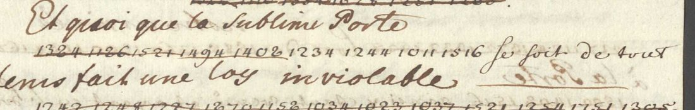
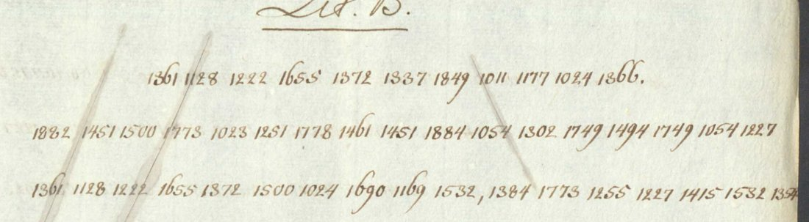
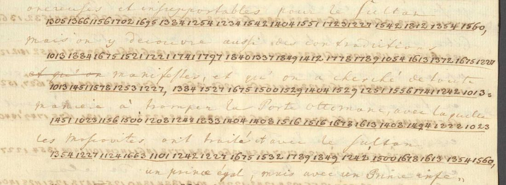

At a glanceKey from adjacent plaintext · partial (87% of cipher tokens valued, not the word count)
- The documents
- Six documents in one code, from the papers of the Swedish legation of Carl Fredrik Höpken and Edvard Carlson at Constantinople: a despatch to the King of 15/26 January 1740, Swedish; “Lit. A”, a French memorandum of 1741 on the last Russo-Ottoman treaty; an extract of the Khan of Crimea’s letter to the King of Sweden, 1742, in French (both glossed); and three bare ones: a letter of the comte de Castellane, the French ambassador, with the envoys’ reply, whose continuation runs to a closing dated 15 July (received 2 October 1741), in French, and a Latin letter signed Ibrahim Effendi, undated.
- Where
- Riksarkivet, Stockholm, Diplomatica Turcica, SE/RA/2119/2119.1/I/9/21 (R0003582, images 321–331 and a second copy 332–342), I/9/26 (R0003635, image 147), I/9/27 (R0003636, images 49 and 50 left), I/9/28 (R0003637, images 227–229) and I/9/29 (R0003653, images 81 right and 82 left); catalogue 1771 (split), 2242, 2244 (partly), 2247 and 2248. Not on DECODE.
- The cipher
- Groups of four digits, 1006 to 1915: a syllabary built for Swedish (i/j, u/v, a/å/ä, o/ö not told apart) with word codes for names and terms, several groups for common syllables, no nulls. A different code from the French-glossed pages of the first despatches (images 255–261 of the same volume).
- How it was read
- The despatch carries the Swedish decipherment of the time over its groups; the code list rebuilt from it was frozen and applied, unchanged, to Lit. A, a page of another volume and year: 222 of 282 groups give exactly the gloss’s letters, against at most 51 for shuffled keys. With 26 values from that gloss the key reads the Castellane letter and the reply; Lit. B is read with the same key. A page of 1742, the Khan’s letter, is a second glossed test: 487 of 602 groups agree with its gloss, against at most 103 for shuffled keys.
- What it says
- The despatch reports the exchange of the signed Swedish-Ottoman defensive treaty. The Castellane letter reports a general divan at the Porte, an invitation to a kind of congress at which “Monsieur de Romanzof” is to be present, and asks the Swedes for their thoughts before a visit to the Porte’s dragoman; the reply thanks him and announces a visit. The Khan tells the King that the Ottoman alliance has not been carried out only because the Porte must fortify its Persian frontier. The Latin letter says the legate of Germany was astonished and is expected to give way on the frontier islands.
- Still open
- All three bare documents are under the 95% bar (84.0%, 90.3% and 66.9% of their words): 17 groups of the Castellane letter and the reply are not in the key (16 have values guessed from the sense, one is unread); Lit. B has 40 words on guessed values and 3 holes; the reply’s continuation (1,961 groups, contributed 16 November 2026) is counted in the reply: 63 of its groups have no key value, about 20 values are new guesses, and the contributor reports a digit-by-digit check of eight of its 157 rows. The 1742 test rests on the contributor’s record for its order (the 1741 test uses the key already in the repository, and the eight sense values proposed before Lit. A was decoded rest on the contributor’s note), and the bare pages are not the key’s held-out test.
- Credit
- The despatch and the key by Daniel Bourdeau’s project (10 November 2026, AI language-model agents); Lit. A, the Castellane exchange and the 1741 test, Lit. B and the Khan’s letter by WAINUT (a Dutch AI company) with AI language-model agents (pull requests #458, #459, #503 and #506). No human palaeographer checked the digits or the readings.
01 The documents
All six are in the volumes of the Swedish legation at Constantinople, most of them the correspondence that Carl Fredrik Höpken and Edvard Carlson sent from Pera to Stockholm. The first is the despatch No. 2 of 15/26 January 1740, in two copies marked duplicate in the same encipherment: images 321–331, where the chancery decipherer struck the groups through and wrote the Swedish plaintext above them, and images 332–342, a second copy (the first two pages glossed, the rest bare) with a note that it came by express on 5 May 1740. It reports the conclusion and exchange of the Swedish-Ottoman defensive alliance treaty.
The others are of 1741. Lit. A is an enclosure to the despatch of 24 February / 4 March 1741: a French memorandum on the treaty between the Porte and the Russians, with the French plaintext of the time written between the underlined cipher rows. The last two have no gloss: a letter of the comte de Castellane, copied in cipher for Stockholm, and the beginning of Höpken and Carlson’s reply, on image 49 and the left page of image 50 of the volume for July to December 1741, which carries the note of receipt, 2 October 1741.
Two further documents. The Khan of Crimea’s letter (image series R0003637, images 227–229, volume I/9/28) is “Lit: A. Extrait de la Traduction de la Lettre du Chan de Crimée à Sa Majesté le Roy de Suede”, an enclosure to Carlson’s despatch of 10/21 May 1742: 614 groups in 60 rows between clear French phrases, with the French plaintext of the time written over the struck groups, so it is glossed like Lit. A. Lit. B (volume I/9/29, R0003653, image 81 right page and image 82 left page, its verso) is a bare cipher copy of two pages, marked “Doupplette” and “Lit. B”, 494 groups, undated (the volume covers 1736–1746): the cipher reads as Latin and gives the signature “Ibrahim Effendi” and an address “Excellentissimo Domino Domino A[h]me[t] [1909]”. The catalogue entry had described the nearby pages as French cipher; these two are Latin.


02 The code and its key
The code is a syllabary: most groups stand for a syllable (1006 d, 1013 ma, 1011 me), many syllables have several groups, and word codes stand for the names and terms of the correspondence (1516 for the Porte, 1413 for the King, 1287 for the Grand Vizir, 1265 for Sweden, 1256 for Russia, 1123 for France, 1713 grefwen for count). No group is a null. Groups above 1749 are ordinary syllables here; in the first, French-glossed code of the same volume (folder hopken1739), the highest group is 1749 and the values clash (1532 is Suède there and a syllable inside Swedish words here).
The key was rebuilt from the decipherment written over the despatch: word-level pairs of each gloss word and the groups under it were made by AI agents from the full-size images, and the key made from the pairs of images 322–325 was frozen before the pairs of 326–327 came back. On the groups of 326–327 as first paired, 457 of 598 (76%; 88% of the 522 whose group is in the key) give exactly the piece the pairing assigns, against a mean of 3.5 and a maximum of 33 in 500 shuffled keys. The test was not strictly blind (the agent pairing those pages had the seed values and the earlier pairs in reach). The second copy, 332–342, was transcribed digit by digit by three agents who opened no other file: 2,987 of its 3,082 groups agree in sequence with the first copy, and where they differ the bare digit, which agrees with the key, was taken (116 groups). The final key has 235 confirmed values, 15 with two and 78 with one witness.

03 The test on a page of 1741
Lit. A is a page of another volume, another year and another language than anything the key was built on. Each run of its groups was lined up with its gloss by dynamic programming, and the key was applied unchanged, as frozen from the despatch: 222 of 282 groups (79%) give exactly the letters of the gloss at their place, and 242 of the 282 are in the key, so 92% of those it knows. With the values of the key shuffled among its groups the best of 200 trials gives 51 and the mean 33.4. The word codes were compared through a fixed list of equivalents written in the script (tractat and traité, ottporten and Porte, and so on). This is a held-out test in the strict sense of the data, and its freezing was not an act of the contributor: the key is the one already in the repository for the despatch. One caveat on the page itself: the French gloss is written between the rows and was in view when the digits were read, but they were read before any decoding and none was changed toward the gloss (the contributor’s note); that bears on the digits, not on the key. One agent made both passes of this transcription.
The 26 values the gloss adds are marked in key_1741.tsv (24 new groups; two single values of the frozen key corrected on the gloss, 1504 from r to vo and 1840 from a to au). The letter and the reply were read with that extended key, not with the frozen one: of the letter’s 205 groups 180 are in the frozen key and 191 in the extended one; of the reply’s 269, 245 and 258. The bare pages are therefore not a held-out test of the frozen key. The contributor says that eight values were proposed from the sense on the letter before Lit. A was decoded and all eight were found in the gloss with the same value; that was noted in the working session and not frozen in a file, so it rests on the contributor’s record.
A second glossed page tests the same frozen key in a third volume and year. The Khan’s letter of 1742 (volume I/9/28) has its French decipherment over the groups; on the transcription made without the key in view, 487 of its 602 glossed groups (81%) give exactly the letters of the gloss at their place, and 554 of them are in the key, so 88% of those it knows; with the values shuffled among the groups the best of 300 trials gives 103 and the mean 63. The frozen key was copied before these pages were decrypted, by the contributor’s record. The gloss then added 21 values and one correction (1324 from pp to et), kept in key_1742.tsv; no value of the 1741 key changed. One caveat is the 8: 23 groups were re-read as 8 after the first decryption, a key-assisted step, and the 22 words that rest on them are listed as such.
04 The readings
The despatch (Swedish, images 321–331). The envoys report how the Porte’s dragoman brought the signed defensive alliance treaty and asked to delay its exchange and keep it secret, how they argued for a prompt exchange, and how the copies were exchanged on 14/25 January 1740 after a present to Ragib Efendi; they credit the King’s firmness over the Russian frontier, note the French ambassador’s late help and ask for a provisional instruction and full powers. This is the decipherment of the time transcribed word by word and checked: 3,411 of 3,450 groups (98.9%) lie in words whose digits and reading are both confident, and 39 groups in 11 doubtful words are not. A reader of the Swedish gave it grade A.
Lit. A (French, image 147). “The more one examines the last treaty made between the Porte and the Muscovites, the more one finds not only onerous and unbearable conditions for the Sultan but manifest contradictions, and that one has sought in every way to deceive the Porte …”, to be shown article by article, beginning with article 2 on the frontiers (the page breaks off). Against the frozen key 84 of its 122 words are verbatim and 3 have a repair marked in marked_lita_1741.txt; the other 35 rest on values the gloss gives over the same groups. It is the contemporary decipherment checked, and grade A.
Castellane to Höpken and Carlson. Il y a [?eu] au[?jo]urd’hui un divan général à la Porte; après ce divan le drogueman de la Porte est venu m’inviter de la part du Grand Vizir de me rendre dimanche [?prochain] à une espèce de con{grè}s, auquel [?Monsieur] de Roman[?zof] doit se trouver. Si vous avez, [?Monsieur], quelques [?réflexions] à me [?communiquer] relatives à vos intérêts, je serois [?charmé] de pouvoir les recevoir avant que le si[?eu]r de Laria [?aille] chez le drogueman de la Porte, [?où] il doit se rendre demain à huit heures du matin.
A question mark in brackets marks a syllable whose group is not in the key and whose value is guessed from the sense (the guesses sit in 13 of the 94 words); the other cipher words are verbatim, except congrès (one value changed) and aille (a letter added, the cipher writing one a for two). The English: “There was [today] a general divan at the Porte; after it the Porte’s dragoman came to invite me on behalf of the Grand Vizier to go [next] Sunday to a kind of congress, at which Monsieur de Romanzof is to be present …”; he asks the Swedes for their reflections on their interests before Laria goes to the dragoman at eight next morning. The notes read “Romanzof” as very probably Aleksandr Rumyantsev, the Russian ambassador; that identification is the contributor’s, from the content only. Who “Laria” is is not settled: the notes record only that the independent reader recalls a dragoman family of that name at the French embassy, not checked.
The reply. It opens with a heading that decrypts as notre réponse au comte de Castelane, from the same groups as the letter’s own heading, then one sentence in clear script, “nous reçevons dans ce moment la lettre que votre Exc. nous a fait l’honneur de nous écrire, hier au soir”, and goes on in cipher: they were most deeply touched with [joy] and gratitude at the [generous] conduct of Your Excellency concerning the interests of their Court, to which no one in this country [1515] is better able to contribute than an ambassador of France; they intend to go the next evening, God willing, to set out their thoughts on the present interests of Sweden with regard to Russia and the Porte; any accommodation between the Porte and Russia is … (the left page ends here).
The reply, continued. Contributed on 16 November 2026 by Tommy Marshment-Howell, who transcribed and read the right page of image 50 and images 51–54 (1,961 groups, two digit readings of each page, 15 groups kept with alternatives). It runs on from “cette dernière puissance es|t très …” and ends with a clear closing, “ce 15 de Juillet, à 3 heures du matin”, no year or signature visible. The envoys argue that Sweden and the Porte should act together against Russia now: Sweden is ready to fight, Russia is stalling on its treaty with the Porte and trying to separate it from Sweden, and France’s guarantee can only work through Sweden. They ask Castellane to have the Porte’s ministers told so, say that if the Russian envoy (Romanzof?) offers terms the Porte should be told a Swedish-Russian rupture is near, and offer the grand vizier a memorandum. The July date is consistent with the receipt note of 2 October on image 49; it was not checked against an edition. The key was applied unchanged; the files are listed under the reply’s full texts below.
The Khan’s letter (French, images 227–229). After reaching the Porte the Khan writes that the delay in carrying out the defensive alliance comes only from the Porte’s need to fortify its frontier with Persia; aid promised to friends depends on circumstances, so aid to Sweden is difficult, but the Ottoman Empire values Sweden’s friendship and will give “tout le secours qui peut dépendre d’elle dans les circonstances présentes”. The war with Russia of 1741–43 is the probable background, inferred from the date only. Against the frozen key 205 of its 256 cipher words are verbatim (80.1%), 23 carry a repair marked in marked_khan1742.txt and 28 rest on groups the key lacks and read only from the gloss; there is no hole. It is the contemporary decipherment checked, and grade A. Twenty-two of the verbatim words rest on digits re-read as 8 after the first decryption (this hand’s 8 looks like a looped 2), so those words are key-assisted.
Lit. B (Latin, images 81–82). Excellentissime Domi[?ne]. Omnia [?qua]e de confiniis distinquendis Excellentia mihi {+di}xit, et [?qua]lis sit lex et con[?sue]tudo in di[?stri]buendis insulis, ego omnia soepe et soepissime explicavi … ita ut legatus Germaniae obstupuit, ne[?sci]vit quid respondeat. Et credo [?quo]d iam non di[?spu]tabit amplius [?de] insulis … Rogo Excellentiam mihi [?ig]no[?sca]t [?quo]d visitare non potui … Et mane[?o] ad obsequia paratus, Ibrahim Effendi.
Question marks in brackets are syllables whose group is in neither key, given the value the Latin needs; braces mark a changed key value or an added letter. In English: “Most excellent lord. Everything that Your Excellency told me about the boundaries to be marked and about the law and custom in dividing the islands I explained often and very often, and the whole dispute was on those foundations, so that the legate of Germany was astonished and did not know what to answer. And I believe he will no longer dispute about the islands … I ask Your Excellency to pardon me that I could not visit … and I remain ready for your service, Ibrahim Effendi.” The writer says he was given leave to call but was summoned early and kept at the Porte until evening. If the islands are those of the Danube and the Sava, this is the frontier settlement after the Treaty of Belgrade (1739); that is an inference and was not checked here. Who the writer and the addressee are is not established.
05 Counted by the README rule
The headline counts only the three bare documents, because the glossed pages are where the key comes from. Words read verbatim from the signs, with guesses, repairs and holes not counted: the letter 79 of 94 words (84.0%), the reply 900 of 997 (90.3%: 109 of 123 to the foot of image 50 left, 791 of 874 in the continuation, with 19 more repaired, 60 guessed and 4 holes in the continuation) and Lit. B 113 of 169 (66.9%; 13 more with a marked repair, 40 on guessed values, 3 holes), together 1,092 of 1,260, 86.7%. The pooled figure mixes French and Latin and three texts of different quality, so the three figures stand beside it; all three are read in part, and the contributor already counted in this way. The earlier headlines were 188 of 217 (86.6%, the first two only) and 301 of 386 (78.0%, before the continuation of the reply was counted). The project’s sentence checker gives 0.444 for the letter, just under its 0.45 line, because it counts each guessed word as a hole and the letter’s sentences are long; 0.615 for the reply. A reader of the French found all four sentences of the letter to hold (grade B). For Lit. B the checker gives 0.348 (8 of 23 sentences), which counts each of its 46 guessed places as a hole and lacks several ordinary Latin words in its list; a reader of the Latin found it real chancery prose from the greeting to the address (grade B), and of ten units counted 9 clean if only holes count, 1 if every guess counts. The project’s own statistical check of the two bare documents, read with key_1741.tsv (449 read tokens, 125 types, 828 letters), gives −1.952 per letter against −3.483 for random keys of the same structure (z 12.2), verdict pass; it is a check of the reading, not a second held-out test, because the key was extended from Lit. A’s gloss and not fitted to these pages. Lit. B was not run through it. With the frozen key (not extended) and the Latin reading the key gives the reading’s value at 419 of Lit. B’s 494 groups (96.5% of those it knows; shuffled keys at most 28), but that count is a consistency figure, because the reading was made with the key in view. The Khan’s letter (584 read tokens, key not fitted to it) gives −2.075 per letter against −3.633 for random keys (z 13.0), verdict pass.
06 What remains uncertain
- The letter and the reply together have 17 groups that are not in the key used (eleven in the letter: 1478, 1452, 1520, 1026, 1339, 1438, 1083, 1056, 1409, 1605, 1508; six more in the reply: 1286, 1326, 1515, 1581, 1733, 1747). Sixteen of them are read from the sense (1515 is unread, next item), three of them (1478 eu, 1452 jo, 1605 où) also by recurring in the reply. The glossed runs of the other volumes, which would confirm them, were not worked. The Khan’s gloss gives 1605 où (confirming the guess at two places) and 1261 de (confirming one guess of Lit. B), but 1286 as Sa, which disagrees with the guess V[otre] at three places of the reply and with ig in Lit. B; none of this is counted.
- The reply’s group 1515 is unread (one place). Laria is spelled la-ri-a-[1409]-le with one a for two words; the name may also be “Lari”. Congrès rests on one changed value (1496).
- Doubtful digits: 1840? and 1227? on image 49, 1678? and 1613? on image 50, 1678? and 1442? on image 147, kept doubtful on enlarged crops (illegible).
- The reply’s continuation (image 50 right page and images 51–54, 1,961 groups) was contributed on 16 November 2026 by Tommy Marshment-Howell and is read in part: 1,894 groups are in the key, 63 have no value (most read as marked guesses, groups 1194, 1096 and 1428 unread), and a few places do not give the expected word (tecon for tenue, mal ha for malgré). The gloss-backed values 1605 ou and 1083 fle come from the glossed continuation of Lit. A (R0003635 image 149 right), where 1083 and 1678 ve stand at two places each, although the key still marks 1678 as mixed. Tecon and insiconer both need 1774 nu where 1778 con stands (the digits are clear, rechecked on enlarged crops); mal ha reads malgré with 1496 grè. The continuation is counted in the headline (791 of 874 words verbatim, 90.5%).
- Other pages of these volumes in the code of the first despatches (images 40, 106, 139 of I/9/24), in this code (images 8, 54, 100, 240, 286 of I/9/26; 8, 93, 135 of I/9/27) and a three-digit number code (image 99 of I/9/25) were surveyed and not worked. Catalogue 2241 was not opened, and of 2244 only images 227–229 were worked (image 482 of that volume is in another code); of 2242 only images 81–82, the pages around them (images 78–80, 82 right, 83–85) were not transcribed.
- Castellane’s own letter may survive in clear in the French diplomatic archives (Nantes), which would be a crib; not checked. Both passes of the 1741 transcription were by one agent; a blind reader copied 92 groups from its own crops (images 147, 49, 50) with no disagreement, and at integration the project compared about 300 groups of images 49 and 147 with the transcriptions, no disagreement at that reading. No human has checked.
- Lit. B: 40 of its 169 words rest on values guessed from the sense (31 groups, 46 places; ten groups recur and hold at every place, 21 occur once and carry content such as super, de, venia), 13 carry a marked change (1461 fi read ni twice, 1471 ga read ia twice, and others) and three are holes (a two-group word in B09, group 1463 and group 1909 after the addressee’s name). Four groups have a doubtful digit (1353?, 1135?, 1495?, 178? with the last digit in a tear). The date, the writer and the addressee are not established; one agent made both passes and image 82 was transcribed after image 81 had been decrypted. About 44 groups of the first rows of image 81 were compared with the image at the integration (all agree); the rest was not.
- Khan’s letter: 14 repairs against confirmed key values are unsettled (some misread digits, some perhaps the encipherer’s slips), the groups 1226 and 1224 are read with two values each, and 22 verbatim words rest on the looped-8 re-reads. One agent made both passes; a blind reader copied 96 groups in 8 rows with no disagreement, and about 40 groups of image 227 were compared again at the integration. The Khan’s original letter, and the rest of the volume, were not looked for.
- The sentence checker gives the Swedish reading of the despatch only 0.095 because it has little Swedish of 1740 to measure against; the reading was graded by a reader.
Full texts
The transcription and the decryption of every document on this page, so that the reading can be used and checked. Short files are shown here; all are in the repository.
despatch_jan1740 (Stockholm, Riksarkivet, Diplomatica Turcica, SE/RA/2119/2119.1/I/9/21 (image series R0003582), images 321-331 (second copy 332-342), 15/26 January 1740)
Höpken and Carlson report to the King how the Porte's dragoman brought the signed defensive alliance treaty and asked to delay its exchange and keep it secret, how they argued for a prompt exchange, and how the exemplars were exchanged on 14/25 January 1740 after a present to Ragib Efendi. They credit the King's firmness over the Russian frontier, note the French ambassador's late help, and ask for a provisional instruction and full powers.
Transcription: transcription.txt
Decryption
# Decoded with key.tsv, word by word; {clear text}; UPPER = value seen once; [1234] = not in the key.
[image 321]
{Dupplett} {17 15/26 Jan. 40.} {upl. i Rådet d. 10 Apr. 1740.} {Stormächtigste Allernådigste Konung!} {Uti wår sista depeche, som war af 5/16 hujus till} {Eders Kongl: Maij:tt och Riks Rådet samt Presidenten} {Högwälborne Hr Grefwe Carl Gyllenborg hwars duplicat} {Wij härhos i underdånighet bifoga, täcktes Eders} {Kongl: Maij:tt i nåder [word inserted above, unread] sig föredraga, huru som} ut-wa-x-li-ngen af de-fe-ns-IV alliance ble-f up-sku-ten i-fra-n da-g ti-l an-na-n {No. 2.}
[image 322]
{samt hwad som} wij fo-r-me-nt wa-ra-de-rt-il or-sa-ken {med mera.} {D. 10/21 hujus} ko-m ottporten-s dro-gue-man ti-l oss och se-d-an ha-n ha-l-sa-t i-fra-n STORVIZIREN och reiseffendin be-ra-tt-de h-an att pa se-ra-GLI-on-s re-it-er-er-de be-fa-l-ni-ng {samt likmätigt} be-me-l-te minister-s e-gne a-stu-n-da-n w-ar tractat {ej(?) alle-} {nast} un-de-r-skri-f-we-n {utan och} ut-le-fo-wer-er-ad i ha-ns ha-nde-r {som han och} {hade} nu ta-git-m-ed s-ig och fra-m-wij-ste de-n-sam-ma sa-ga-DES si-g ha-f-wa or-dre-s att la-ta fo-r-fa-r-di-ga en ti-en-LIG pu-ng att la-gg-a de-ns-AM-ma u-ti och so-m ottporten an-se-r {(Eders} {Kongl: Maij:tt} in-te-re-sse och ba-sta sa-so-m si-tt e-git {/: hwilcket} HA-n och fo-r-da-r att {Eders Kongl: Maij:tt lärer} gi-o-ra me-d he-nn-e {:/} sa ba-l-la-nce-ra-de {man} {intet} att an-fo-r-tro oss att {åtskillige} wi-ck-ti-ge con-si-de-ra-tion-er {[som]} fo-r-an-la-to he-nn-e att a-stu-n-da och on-ska {det} {måtte denna} negociation an-nu na-gon li-ten t-d ha-l-as ty-st {, hwarwid} h-an so-m af si-g si-el-f sa-de att ottporten wi-l-e {giärna} bli-f-wa fo-r-wi-ss-ad om d-en si-d-ste fred-s-tractat-ns e-xe-cu-TION a ryssland-s si-da {Derföre(?)} be-ra-tt-de h-an s-ig ha-f-wa or-dre-s att pro-po-ne-ra ti-l oss om wij {icke} sam-ty-ck-TE {till at} ba-g-ge ex-em-pla-ren af de-[1337?] alliance ma-tt-e {ännu för någon} li-ten t-d ku-nn-a fo-r-wa-ra-s e ha-ns ha-nde-r och wij {likafullt} skrif-wa och be-ra-t-ta wa-rt h-of att sam-ma alliance w-ar slu-ten pa d-et att {Eders Kongl: Maij:tt} ho-ga ra-ti-fi-ca-tion
[image 323]
ma-tt-e hi-[1532?]-sa-n-da-s wij swa-ra-de att {alt hwad som war} ottporten an-ge-na-mt de-t w-ar och sa {Eders Kongl: Maij:tt} an-ge-na-mt {, men at} wij sa-so-m wer-ck-ty-g ti-l wa-n-skap-e-ns un-de-r-ha-l-la-nde och fo-ro-ka-nde {kunde wij} {underlåta(?) at härwid} pa-mi-nn-a att so-m [1313] i {anledning} af ha-ns och de an-dre ottporten-s minister-s gi-or-de fo-r-sa-kri-ng-ar om en pro-mt ut-wa-X-li-ng {som redan(?)} {till} fo-l-je af sa-mm-a lo-f-ten och fo-r-sa-kri-ng-ar bo-rt ske ha-de {flere} {gånger} skrif-f-WIT och be-ra-tt-att {hwad} {som} wa-r sta-d-fa-st och of-we-re-ns-ko-mm-it {; så skulle} d-et nu fa-l-a oss swa-rt och {kunna (?)} ha-FWA en el-AK wa-r-ka-n om wij nu ble-we no-d-ga-de att be-ra-tt-a de-t-ta pro-po-ne-r-de up-sko-f och {således} an-dra och om-ku-l-ka-sta wa-re fo-rr-e re-la-tion-er {och det så mycket mera, som Wij tilförende(?)} re-da-n be-ra-tt-att att h-an dro-gue-man si-el-f be-dt oss {[att]} de-CLA-re-ra {at detta war} en slu-ten negociation fo-r al-la de {som kunde hafwa} {någon} ku-n-skap h-ar om {Alt hwad han(?) nu mera} re-com-me-nde-r-de ty-st-het-en wi-d-ko-mm-er {så är intet twifwelsmål uppå at den ju} {skall blifwa efter åstundan} i ac-ckt-ta-gon me-n ut-wa-x-li-ngen {aldeles intet i det öfri-(?)} {ga(?) så} pro-mo-ve-ra-de de-n-sam-ma {, medan} {som} ma-n ej h-de af no-de-n att fra-m-wij-sa o-ri-gi-na-l ex-em-pla-re-t om ma-n wi-l-e pu-bli-ce-ra en a ba-gg-e si-DO-r of-we-re-ns-ko-mm-en och slu-ten negociation att s-om de-t w-ar he-la wer-l-de-n be-ka-nt att {Eders Kongl: Maij:tt}
[image 324]
con-te-na-nce och ti-l-ru-st-ni-ng-ar em-ot de-n RYSKA-gra-ntz-K {hade förmenligast} ac-ce-le-re-ra-t fred {samt} wa-ri-t or-sa-ken att ryssland sam-ty-ckt {till och} sku-n-da-t up-pa de-n sam-ma {, så är wij häller något twifwelsmål, at icke} ku-n-skap-en om de-nn-e de-f alliance sku-l-e {mycket snarare} bi-dra-ga ti-l en pro-mt e-xe-cu-tion af d-et so-m i sam-ma fred-s-tractat ar sti-pu-le-ra-t an att pa na-git sa-tt wa-ra de-r-ti-l hi-nde-r-lig {At som nu et fartyg låg segelfärdigt till at gå till Marseille, så kunde Wij per det bästa sättet} och me-d al ty-st-het o-wer-sa-n-da ottporten-s or-ig-in-al ex-em-pla-R {; således förr at om den lägenheten går oss utur händerne så skulle Wij wara nödgade en annan gång} och na-r ut-we-x-li-ngen sku-l-e ske att sa-n-da de-t sa-mm-a i bri-st af {annan lägenhet} me-d en co-ur-je-r {hwilken} sku-l-e up-wa-ck-a la-ng-t sto-rr-e up-me-r-k-sam-het och fo-r-or-sa-ka me-ra om-bra-ge {Dessutom som Wij sen[?]} TRACTAT-en wa-ra un-de-r-skri-we-n re-da-n de-n 2-2 DECEMBRE och wij ut-fa-st oss att ra-ti-fi-ca-tion de-R-af sku-l-e wa-ra ha-r in-na-n 4 ma-na-de-r-s fo-r-lo-PP {så blef det} om-o-J-li-git bri-n-ga de-t wij {aldeles} lo-f-wa-t ti-l wa-r-k-sta-l-ig-het ha-n sa-de {hwad} de-t si-d-sta ski-al-et wi-d-ko-mm-er sa be-ho-f-de wij ej wa-ra be-KY-m-ra-de o-wer ra-ti-fi-ca-tion-s te-r-mi-ne-n {på hwilken det wij skulle} ko-mm-a sa no-ga an {medan man} ej ar-na-de ra-k-na
[image 325]
me-d oss so-m me-d an-dra {Och at han förefö[?]git wara så mycket} la-tt-a-re o-wer-ty-ga-d af de-t wij ha-de sa-gt so-m ha-n {andra för detta} wa-ri-t af sa-mm-a ta-n-ka {At han wille} ta-ga al-t sa-mm-an-s ad-re-fe-ren-du-te {till at giöra} de-r-om si-n ra-po-rt och gi-wa oss swa-r de-n {följande} da-gon {För öfrigit giorde han} ma-n-ge pro-te-st-att-ION-er om ottporten-s up-ri-ck-ti-g-het och wa-l-me-ni-ng sa-mt sa-rd-el-es ho-ga-ck-t-ni-ng fo-r {Eders Kongl: Maij:tt härtill} de-nn-e alliance wa-r de-t sta-r-ka-ste be-wij-co so-m ar-DE-n al-dra-fo-rst-a af de-n na-tu-r och {beskaffenhet} so-m ottporten {någonsin} in-ga-tt me-d en an-na-n PUISSANCE {Han sade sig också böra giöra} de-n franska-e ambassadeur-en de-n ju-sti-ce att ha-n {mycket} con-tri-bu-er-att ti-l att up-ly-sa o-go-ne-n pa ottporten-s mi-ni-STRE-r sa-mt ko-mm-it de-m att be-GRI-pa de-nn-e alliance-ns ny-tt-a {hwilken han} sa-gt wa-ra de-t sta-r-ka-ste me-de-l ti-l att gi-o-ra frankrike-s GUA-ra-nt-je kra-F-ti-g {Som han} dro-[1053?]-ma-n ha-de fo-rst wa-ri-t ho-s be-me-l-te ambassadeur {förrän han} rt-m ti-l oss {så märkte Wij fullwäl at han} an-mo-da-t ho-no-m att sa-le-de-s ta-la {; Men Wij blefwo mera förwissade derom,} sa-mm-a af-to-n da wij be-so-ckt-e ambassadeur-en {Han förekom oss, förrän Wij fingo tala[?] och frågade om} ottporten-s dro-gue-man ej ha-de sa-gt na-git om ho-u-m {Hwarpå Wij togo} ti-l-fa-l-e att ta-c-ka ho-n-om fo-r d-en de-l h-an ha-ft i de-nn-e negociation
[image 326]
s-ly-cke-li-ge je-ta-nde {hwilket myket} {fägnade honom, så at han bad oß [en...]ligen (last word unsure)} skrif-wa ti-l wa-rt hof och be-ra-t-TA att frankrike h-ar nu fo-or ti-de-n g-an-ska sto-r cre-di-t w-d ottporten {hwilken} cre-d-it ha-n fo-r-sa-kra-de sko-la bli-wa {helt och hållit} an-wa-nd ti-l {Eders Kongl: Maj:ts} och de-ss ri-cke-s ny-tt-a och fo-r-mo-n {så} S-wa-rt s-om de-t wa-ri-t oss att wij ha-r ti-l-s wa-ri-t no-d-ga-de att be-swa-ra oss of-wer be-me-l-te ambassadeur-s fo-r-fa-ra-nde sa ka-rt ar d-et oss att wij ku-nn-a nu {i underdånighet berätta} {Eders Kongl: Maj:tt} att h-an an-dra-t si-n con-du-i-te och be-GYN-nt att wa-ra oss be-hi-el-PE-lig {hwilken} an-DR-ng wij OB-se-r-ve-ra-t al-t se-da-n de-n si-ste EXPRES an-ko-m i-fra-n VENEDIG sa att wij fo-r-m-ar-ka att de-n sam-ma ma-st ha-wa bra-ckt ho-no-m STRA-n-ga or-dre-s i-fra-n si-tt hof {hwilket} la-r wa-ri-t en wa-r-k-an af grefwen TESSIN-s go-da be-ar-be-ta-nde w-d sam-ma hof s-om ambassadeur {och så låtit (reading of 3rd word unsure)} oss fo-r-sta u-ti si-ne di-SCO-ur-se-r da h-an be-ra-tt-att oss i {hwad} cre-di-t be-me-l-te grefwen sto-d wi-d de-t franska hof {d. 11/22} {hujus berättades} wi-d ottporten att w-ar dro-gue-man att ma-n h-de gi-l-att wa-r me-ni-ng {angående} tractat-ns ut-wa-x-li-ng da ottporten-s dro-gue-man la-t an-mo-da oss att a ny-O ren-skrif-wa wa-rt ex-em-pla-r sa-mt pre-pa-re-ra de de-rt-il no-di-ge ZI-ra-te-rne
[image 327]
sa wi-l ha-n {så snart som} wij wo-ro fa-r-di-ge ko-mm-a och ut-wa-x-la de-n sam-ma wij la-to {d. 12/23} A-er-te-ra ho-no-m att wa-rt ex-em-pla-r w-ar fa-r-di-gt m-en ha-n un-da-n-dro-g si-g att ko-mm-a un-de-r {en och annan} fo-re-w-an-d-ni-ng ti-l de-ss wij om-si-d-er fo-r-ma-r-ckt-e {at något} ny-tt wa-r att-er pa fo-ar-de {hwarom} wij ble-f-wo up-ly-ste af h-on-om si-el-f {som lät} sa-ga oss att wij ej ku-nde un-wi-ka att gi-o-ra ti-l me-k-tu-b-gi-n {eller (written in clear and struck through with the cipher)} sta-t-s-se-cre-te-ra-ren ra-gi-B ef-fe-n-di en an-sta-n-di-g pre-se-nt {ej allenast} fo-r de-t h-an w-ar-it en af de ut-af SULTAN ut-na-MND-e com-mi-ss-ar-je-rne {utan} {och} fo-or d-et ha-n my-ck-et ar-be-ta-t och con-tri-bu-er-att t-il de-n-ne wa-r negociation-s ly-cke-li-ge slu-t {Hwarpå} wij sa-nde be-me-l-te sta-TS-se-cre-te-ra-re {/: som sielf} ar en hu-rt-ig och des-in-te-rr-e-sse-ra-d m-an {:/} en pre-se-nt af tre pu-ng-ar {eller} [1689]-[1771] P-I-as-tre-s wa-rd-e da ge-na-st {samma dag, neml: d. 14/25 hujus} dro-gue-man in-fa-nt si-g ho-s oss och of-wer-le-wer-er-de oss de-t ha-r ho-s {i underdånighet bifogade} ottporten-s ex-em-pla-r s-om wij ut-by-tt-e em-ot wa-rt {efter} {åtskillige [...]liga (second word unsure)} re-ci-pro-QUE com-PLI-MEN-er och fo-r-sa-kri-ng-ar om in-bo-rd-es wa-n-skap och fo-r-tro-lig-het e-me-l-an {Eders Kongl: Maj:tt} och ottporten {Ibland annat} be-ra-tt-de h-an att reiseffendin la-t sa-ga oss att en-or-sa-k ti-l de-nn-e negociation-s go-da ut-SLA-g wa-r {den} franska st-het och he-m
[image 328]
lig-het {med hwilken} wij ne-go-ti-er-att sa-att in-gon me-n-ni-ski-a e-hu-ru up-ma-r-k-sa-me {som åtskillige} wa-ro pa oss ku-nn-att fo-or-ma-r-ka d-et ri-n-ga-ste {eller} ha-ft de-n m-in-sta ro-ken d-er-af {hwaröfwer} h-an la-t fo-r-KLA-ra si-tt sa-rd-el-es no-je sa-le-des {Allernådigste Konung,} ha-wa wij nu {igenom den} al-dra-ho-G-as bi-sta-nd fu-l-gi-or-dt och ef-te-r-ko-mm-it {Eders Kongl: Maij:tts} na-di-G-e or-dre-s och in-stru-c-tion an-ga-en-de en de-fe-ns-ju alliance tractat-s in-ga-e-nde m-ed d-en ottporten {Och som wår nådeste} {dichtan och trachtan är at kunna efter all wår} {ytterste förmåga upfylla wår underdånige} {plicht och skyldighet emot Eders Kongl: Maij:tt, så} {tänckte Wij [sagl: ?], at så snart det Eders Kongl: Maij:tt} me-d al-le-r-na-di-G wa-l-be-ha-g an-se-dt de-sse wa-re fo-r-ra-tt-ni-ng-ar {hwilket är och skall blifwa den största belöning} {Wij i werlden åstunda.} {Hwad widare} ski-al so-m ku-nn-att of-wer-ta-la och be-we-ka ottporten att slu-ta ma-d {Eders Kongl: Maij:tt} de-nn-e alliance tractat {så kunna och böra} wij up-pa wa-re sam-we-ten {underdånigst} fo-r-sa-ha att d-en fe-r-me-te me-d {hwilken Eders Kongl: Maij:tt} fo-r-fa-ri-t d-et fo-or-FLU-t-ne ar-et i-an se-e-nde KRIG-s-ti-l-ru-st-ni-n-ga-rne a de-n RYSKA gra-ntz-en sa-mt d-en fa-rd-ig-het {Eders Kongl: Maij:tt} wij-st ti-l att as-si-ste-ra ottporten h-ar {förnemligast} be-we-ckt he-nn-e t-il al er-ka-ntz-lo sa-mt fo-r-ma-tt he-nn-e att so-ka ti-l att fo-r-bi-n-da si-g m-ed {Eders Kongl: Maij:tt} u-ti en sa na-ra
[image 329]
wa-n-skap om {hwilken} ho-n na-gra ar bo-rt att tro-dt att {Eders Kongl: Maij:tt} wa-ri-t a si-n si-da sa li-te-t m-an {och det förmedelst} de la-ng-e up-sko-f och ti-d-se-ns ut-DRA-ck-te-r att fa swa-r i-fra-n SWERIGE up-pa de-ss re-i-te-re-ra-de an-b-UD af SAM-ma wa-n-skap-tractat att wij {aldrig} fo-r an-nu ku-nn-att of-wer-ty-ga he-nn-e {at åtskillige} fa-ta-li-te-te-r me-n {aldeles intet} bri-st af go-d wi-l-ga och up-ri-c-k-ti-g-het a {Eders Kongl: Maij:tts} si-da wa-ri-t or-sa-ken ti-l de-ss-e DRO-g-s-ma-l {Wij kunna ej heller [undra ?] dertill at icke} de-n franska ambassadeur-s go-de of-fi-ci-er wa-ri-t ti-l na-gon ny-tt-a nu wi-d slu-te-t af negociation {och det hafwa Wij äfwenwäl} la-ti-t be-me-l-te ambassadeur fo-r-sta {hälst som} ha-n ar i sto-r cre-di-t h-oss na-r-wa-ra-nde mi-ni-ste-re och {kommer ännu at} na-gon t-d re-si-de-ra h-ar och K-an {således} wa-ra oss {til widare} ti-en-st {hwad} ny-tt-a och fo-rd-el ed-er-s konglmajt h-ar att fo-r-wa-n-ta af de-nn-e alliance {såsom} et go-dt och kra-f-ti-gt me-de-l att h-al-la ryssland ti-l-ba-ka i-fra-n {hwarjehanda} o-ro-lig-het-s fo-r-of-wa-nde em-ot de-ss gra-nn-ar {det kunde} ed-er-s konglmajt ba-st si-el-f {efter sin} ho-ga wij-s-het ef-te-r-si-nn-a och ski-ar-sko-da {Det böra Wij underdånigst säja at som ofwannämnde} ed-er-s konglmajt-s i ac-ckt ta-gne con-du-i-te wi-d de {[således ?] är} e-XI-ste-ra-de con-ju-n-c-tu-re-rne wa-ri-t h-oss ottporten d-et ma-st be-we-ka-nde ski-al-et t-il de-n-ne alliance-ns slu-ta-nde {så är och blir den samma äfwenwäl} de-n sa-kra-ste ga-ra-nt fo-r de-ss ef-te-r-le-f-wa-nde och i ac-ckt ta-ga-nde a ottporten-s si-da d-en sto-r-sta ny-tt-an so-m
[image 330]
{Eders Kongl: Maij:tt} ka-n ha-mt-a d-er-af i-fra-n d-en-ne si-d-an bli-r n-ar ottporten {ser [.]ingen (two clear words at line end and line start, second unsure)} t-vu-ngen ig-en-om ryssland-s con-du-i-te {resp: och} af e-git be-r-ad {förmedelst} mi-ni-ste-re-ns bo-je-l-se ko-mm-er att fa na-gon de-me-le me-d ryssland i {hwilcken} ha-nde-l-se ed-er-s konglmajt ska-l ku-nn-a ut-be-ti-n-ga s-ig h-wa-d wi-l-ko-[1640]-r {Eders Kongl: Maij:tt} K-an a-stu-n-da {Hwarföre det synes oß under-} {dån. oförgripeligen} bli-f-wa no-di-gt att ed-er-s konglmajt la-te-r fo-r-se de-ss ha-r re-si-de-ra-nde minister-r {resp:} minister m-ed en pro-vi-si-on-el in-stru-c-tion och fu-l-ma-ckt pa de-t {igenom} en sa la-ng-sam co-rr-e-SPO-nde-nce so-m {för} d-en la-n-ga wa-gon gi-or o-un-wi-cke-lig {är} go-de ti-l-fa-l-en ej ma-tt-e ga ut-ur ha-nde-rne d-et ga-m-la ha-te-t so-m de-nn-e na-tion h-ar ti-l ryssland {är} {mera än} fo-r-du-b-BLA-t {igenom denna} si-ste t-wi-sti-g-he-ten sa att fred {[u.pp.ligen] (clear word unread)} la-r bli-wa la-ng-wa-ri-g {och [både Keis:le ?] (two clear words unsure)} wi-d fo-r-sta om-by-t-ni-ng af mi-ni-ste-re lo-pa fa-ra att of-wer-an-da-ka-sta-s sa att ed-er-s konglmajt s-minister-r h-ar ku-nn-a ef-te-r wa-r {underdån. oförgripelige} ta-n-ka ej gi-o-ra ny-t-ti-ga-re ti-en-st an att al-ti-d {på tienligit och anständigt sätt} ha-l-a ottporten-s minister-r-s OG-on up-ne of-wer ryssland-s al-t fo-r sto-ra och di-SPRO-po-r-tion-er-de MA-ckt {samt öfwer} no-d-wa-n-di-g-he-ten att re-du-ce-ra {samt} ma-ckt in-n-om de ga-m-le SKRA-n-ko-rne {Hwad} subsidier-ne wi-d-ko-mm-er {så hafwa wij} fo-r ga-n-ska ma-ng-e och wi-ck-ti-ge ski-al ej ha-l-it fo-r ra-de-li-gt {att nu för} sta-r-ckt YR-ka de-r pa {hälst}
[image 331]
{hos} de-nn-e my-ck-et mi-ss-ta-n-k-sam-me NATION {som kunde} tro att ed-er-s konglmajt ej ha-de an-n-an vu-e m-ed alliance-n an {allenast att} fa be-me-l-te subsidier {At det och warit} o-mo-je-li-gt att nu fa de-m {det lärer klarl:n} se-s de-r-af att en sa e-gon-ny-tt-ig mi-ni-ste-re so-m de-n na-r-wa-ra-nde ar {[ej ?] kunnat} em-ot-sta et sa-da-nt an-bu-d {som det} wa-ri-t att fa be-ha-l-a fi-er-de-d-el-en me-n n-ar ca-SU-s ex-IS-te-ra-r af na-gon ac-ti-vi-te-t {så will det} ej bli-wa swa-rt att fa al-t {hwad som} ka-n a-stu-n-da-s och [1640]-pro-f-wa-s no-di-gt {hälst} om frankrike so-m {tillika med} ed-er-s konglmajt al-le-na ha-f-wer na-gon cre-di-t wi-d de-tt-a hof al-ti-d se-con-de-ra-r ed-er-s konglmajt vu-er och in-ten-tion-er ho-s de-n TURK-i-ske mi-ni-ste-ren {Med all Undersåtelig zèle och Wördnad fram-} {härda wij till dödsstunden} {Stormäcktigste Allernådigste Konung} {Eders Kongl. Maytts} {Pera i Constantinopel} {d. 15/26 Jan: 1740} {Allerunderdånigste och tropliktigste} {tienare och undersåtare} {C: F: v: Höpken} {E: Carlson}Reading
# The contemporary Swedish decipherment with the clear text, in order. [word ?] = doubtful (see the note column of the pairs). This is the chancery decipherer's text as written over the groups, not the output of key.tsv; the key applied group by group is decryption.txt. [image 321] Dupplett 17 15/26 Jan. 40. upl. i Rådet d. 10 Apr. 1740. Stormächtigste Allernådigste Konung! Uti wår sista depeche, som war af 5/16 hujus till Eders Kongl: Maij:tt och Riks Rådet samt Presidenten Högwälborne Hr Grefwe Carl Gyllenborg hwars duplicat Wij härhos i underdånighet bifoga, täcktes Eders Kongl: Maij:tt i nåder [word inserted above, unread] sig föredraga, huru som Utwäxlingen af defensive alliancen blef upskuten ifrån dag till annan No. 2. [image 322] samt hwad som wij förmente wara dertil orsaken med mera. D. 10/21 hujus kom Ottom: Portens drogueman till oss och sedan han helsat ifrån Stor Viziren och Reiseffendin berättade han at på Seragliens reitererade befallning samt likmätigt bemälte Ministers egna åstundan war tractat ej(?) alle- nast underskrifwen utan och utlefwererad i hans händer som han och hade nu tagit med sig och framwiste den samma sägandes sig hafwa ordres at låta förfärdiga en tienlig pung att lägga den samma uti Och som Ottom: Porten anser (Eders Kongl: Maij:tt interesse och bästa såsom sitt egit /: hwilcket han och förmodar att Eders Kongl: Maij:tt lärer giöra med henne :/ så ballancerade man intet at anförtro oss at åtskillige wicktige considerationer [som] föranlåta henne att åstunda och önska det måtte denna negociation ännu någon liten tid hållas tyst , hwarwid han som af sig sielf sade att Ottom: Porten wille giärna blifwa förwissad om den sidsta fredstractatens execution å Rysslands sida Derföre(?) berättade han sig hafwa ordres att proponera till oss om wij icke samtyckte till at bägge exemplaren af dess alliancen måtte ännu för någon liten tid kunna förwaras [i ?] hans händer och wij likafullt skrifwa och berätta wårt håf at samma alliance war sluten på det att Eders Kongl: Maij:tt höga ratification [image 323] måtte hitsändas wij swarade att alt hwad som war Ott: Porten angenämt det war och så Eders Kongl: Maij:tt angenämt , men at wij såsom wärcktyg till wänskapens underhållande och förökande kunde wij underlåta(?) at härwid påminna att som [v: Haren(?) ?] i anledning af hans och de andre Ott: Portens Ministers giorde försäkringar om en promt utwäxling som redan(?) till följe af samma löften och försäkringar bordt ske hade flere gånger skrifwit och berättat hwad som war stadfäst och öfwerenskommit ; så skulle det nu falla oss swårt och kunna (?) hafwa en elak wärkan om wij nu blefwe nödgade att berätta detta proponerade opskof och således ändra och omkullkasta wåre förre relationer och det så mycket mera, som Wij tilförende(?) redan berättat att han Drogueman sielf bedt oss [att] declarera at detta war en sluten negociation för alla de som kunde hafwa någon kundskap här om Alt hwad han(?) nu mera recommenderade tystheten widkommer så är intet twifwelsmål uppå at den ju skall blifwa efter åstundan i ackt tagen men utwäxlingen aldeles intet i det öfri-(?) ga(?) så promoverade den samma , medan som man ej hade af nöden att framwisa original Exemplaret om man wille publicera en å bägge sidor öfwerenskommen och sluten negociation Att som det war hela werlden bekant att Eders Kongl: Maij:tt [image 324] contenance och tillrustningar[ne] emot den [Ryska gränsen ?] hade förmenligast accelererat Fred samt warit orsaken att Ryssland samtyckt till och skyndat uppå den samma , så är wij häller något twifwelsmål, at icke kundskapen om denne defens: alliancen skulle mycket snarare bidraga till en promt execution af det som i samma Freds tractat är stipulerat än att på något sätt wara dertil hinderlig At som nu et fartyg låg segelfärdigt till at gå till Marseille, så kunde Wij per det bästa sättet och med all tysthet öfwersända ottomanniska Portens original Exemplar ; således förr at om den lägenheten går oss utur händerne så skulle Wij wara nödgade en annan gång och när utwäxlingen skulle skie att sända det samma i brist af annan lägenhet med en courier hwilken skulle uppwäcka långt större upmärksamhet och förorsaka mera ombrage Dessutom som Wij sen[?] Tractaten wara underskrifwen redan den 22 Decembre och wij utfäst oss att ratification deraf skulle wara här innan 4 månaders förlopp så blef det omöjeligt bringa det wij aldeles lofwat till werkställighet Han sade hwad det sidsta skiälet widkommer så behöfde wi ej wara bekymrade öfwer ratifications terminen på hwilken det wij skulle komma så noga an medan man ej ärnade räkna [image 325] med oss som med andra Och at han förefö[?]git wara så mycket lättare öfwertygad af det wi [hade] sagt som han andra för detta warit af samma tancka At han wille taga alt sammans ad referendum till at giöra [derom] sin rapport och gifwa oss swar den följande dagen För öfrigit giorde han många protestationer om Ott: Portens uprichtighet och wälmening samt särdeles högachtning för Eders Kongl: Maij:tt härtill denne alliance war det starckaste [bewijs ?] som är den allraförsta af den natur och beskaffenhet som Ottom: Porten någonsin ingått med en annan Puissance Han sade sig också böra giöra den Fransöske ambassadeuren den justice att han mycket contribuerat till att upplysa ögonen på Portens ministrer samt kommit dem att begripa denne alliancens nytta hwilken han sagt wara det starckaste medel [til] att giöra Franckrikes guarantie kraftig Som han Drogueman hade först warit hoos bemelte Ambassadeur förrän han kom till oss så märkte Wij fullwäl at han anmodat honom att således tala ; Men Wij blefwo mera förwissade derom, samma afton då wij besökte ambassadeuren Han förekom oss, förrän Wij fingo tala[?] och frågade om Ott: Portens Drogueman [ej] hade sagt något om honom Hwarpå Wij togo tillfälle att tacka honom för den dehl han haft i denne negociation [image 326] [negociation]s lyckeliga [slutande ?] hwilket myket fägnade honom, så at han bad oß [en...]ligen (last word unsure) skrifwa till wårt Hof och berätta att Franckrike har nu för tiden ganska stor Credit wid Ott: Porten hwilken Credit han försäkrade skola blifwa helt och hållit anwänd till Eders Kongl: Maj:ts och dess Rikes nytta och förmohn så swårt som det warit oß att wij här tils warit nödgade att beswära oß öfwer bemälte Ambassadeurs förfarande så kärt är det oß att [wij] kunna nu i underdånighet berätta Eders Kongl: Maj:tt att han ändrat sin conduite och begynt att wara oß behielpelig hwilken ändring wij observerat alt sedan den sidsta Exprès ankom ifrån Venedig så at wij förmärka att den samma måst hafwa bracht honom stränga ordres ifrån sitt Hof hwilket lär warit en wärkan af Grefwen Teßins goda bearbetande wid samma hof som Ambassadeuren och så låtit (reading of 3rd word unsure) oß förstå uti sine discourser då han berättat oß i hwad credit bemälte grefwen stod wid det franska hofwet d. 11/22 hujus berättades wid Ott: Porten åt wår Drogeman at man hade gillat wår mening angående tractatens utwäxling då Ott: Portens Drogeman lät anmoda oß att å nyo renskrifwa wårt exemplar samt preparera de dertil nödiga Ziraterne [image 327] så wille han så snart som wij woro färdiga komma och utwäxla den samma Wij läto d. 12/23 avertera honom at wårt Exemplar war färdigt men han undandrog sig att komma under en och annan förewändning till deß wij omsider förmärkte at något nytt war åter på färde hwarom wij blefwo uplyste af honom sielf som lät säga oß at wij ej kunde undwika at giöra till Mecktubgin eller (written in clear and struck through with the cipher) Statssecreteraren Ragib Effendi en anständig present ej allenast för det han warit en af de utaf Sultan utnämnde Commissarierne utan och för det han mycket arbetat och contribuerat til denna wår negociations lyckeliga slut Hwarpå wij sände bemälte Statssecreterare /: som sielf är en hurtig och desinteresserad man :/ en present af [tre] Pungar eller [1500 ?] Piastres hwarpå då genast samma dag, neml: d. 14/25 hujus Drogeman infant sig hos oß och öfwerlefwererade oß det här hos i underdånighet bifogade Ott: Portens Exemplar som wij utbytte emot wårt efter åtskillige [...]liga (second word unsure) reciproque complimenter och försäkringar om inbördes wänskap och förtrolighet emellan Eders Kongl: Maj:tt och Ott: Porten Ibland annat berättade han att Reis Effendi lått säga oß at en orsak til denne negociations goda utslag war den fransyska [h..]tighet och hem[lighet] [image 328] [hem]lighet, med hwilken wij negocierat, så at ingen menniskia, ehuru upmärksamme som åtskillige woro på oß, kunnat förmärka det ringaste eller haft den minsta röken deraf hwaröfwer han låt förklara sitt särdeles nöije. Således, Allernådigste Konung, hafwa wij nu igenom den [aldrahögstes ?] bistånd fullgiordt och efterkommit Eders Kongl: Maij:tts nådige ordres och instruction angående en defensive alliance tractats ingående med den Ott: Porten. Och som wår nådeste dichtan och trachtan är at kunna efter all wår ytterste förmåga upfylla wår underdånige plicht och skyldighet emot Eders Kongl: Maij:tt, så tänckte Wij [sagl: ?], at så snart det Eders Kongl: Maij:tt med [allernådigst ?] wälbehag ansedt deße wåra förrättningar, hwilket är och skall blifwa den största belöning Wij i werlden åstunda. Hwad widare skiäl, som kunnat öfwertala och beweka Ott: Porten at sluta med Eders Kongl: Maij:tt denne alliance tractat så kunna och böra wij uppå wåra samweten underdånigst [försäkra ?] at den fermeté med hwilken Eders Kongl: Maij:tt förfarit det förflutna året i an[seende] [an]seende till krigsrustningarne å [den] Ryska gräntzen, samt den färdighet Eders Kongl: Maij:tt wist til at assistera Ott: Porten, har förnemligast bewekt henne till all erkäntzlo samt förmått henne at [söka] till att förbinda sig med Eders Kongl: Maij:tt uti en så nära [image 329] wänskap, om hwilken hon några år bort åt trodt at Eders Kongl: Maij:tt warit, å sin sida, så litet mån och det förmedelst de långe upskof och tidsens utdräckter at få swar ifrån Swerige uppå deß reitererade anbud af samma wänskapstractat at wij aldrig för ännu kunnat öfwertyga henne at åtskillige fataliteter, men aldeles intet brist af god wilja och uprichtighet å Eders Kongl: Maij:tts sida warit orsaken till deße drögsmåhl. Wij kunna ej heller [undra ?] dertill at icke den franska Ambassadeurens goda officier warit till någon nytta nu wid slutet af negociation och det hafwa Wij äfwenwäl låtit bemelte ambassadeur förstå hälst som han är i stor credit hos närwarande ministere och kommer ännu at någon tid residera har och kan således wara oß til widare tienst hwad nytta och fördehl Eders Kongl. Majt har at förwänta af denne alliance såsom et godt och krafftigt medel att hålla Ryßland tillbaka ifrån hwarjehanda oroligheters föröfwande emot deß grannar det kunde Eders Kongl. Majt bäst sielf efter sin höga wishet eftersinna och skiärskåda. Det böra Wij underdånigst säja at som ofwannämnde Eders Kongl. Majts i ackt tagne conduite wid de [således ?] är existerade conjuncturerne warit hos Ott: Porten det mäst bewekande skiähl till denne alliances slutande, så är och blir den samma äfwenwäl den säkraste garant för deß efterlefwande och i ackt tagande å Portens sida. Den största nyttan, som [image 330] Eders Kongl: Maij:tt kan hemta deraf ifrån denna sidan blir när Ott: Porten ser [.]ingen (two clear words at line end and line start, second unsure) twungen igenom Ryßlands conduite resp: och af eget b[e]råd förmedelst ministerens böjelse kommer att få någon demelé med Ryßland i hwilcken händelse Eders Kongl Majt skall kunna utbetinga sig hwad [willkor ?] Eders Kongl: Maij:tt kan åstunda Hwarföre det synes oß under- dån. oförgripeligen blifwa nödigt at Eders Kongl Majt låter förse deß här residerande Ministrer resp: ministre med en provisionel instruction och fullmackt på det igenom en så långsam correspondence som för den långa wägen giör oundwikelig är goda tillfällen ej måtte gå utur händerne det gamla hatet som denne nation har till Ryßland är mera än fördubblat igenom denna sista twistigheten så at fred [u.pp.ligen] (clear word unread) lärer blifwa långwaracktig och [både Keis:le ?] (two clear words unsure) wid förstå ombytning af ministere löpa fara att öfwerändakastas så at Eders Kongl Majts Ministrer här kunna efter wår underdån. oförgripelige tanka ej giöra nyttigare tienst än att alltid på tienligit och anständigt sätt hålla Ott: Portens Ministers ögon öpne öfwer de [Ryßlands] alt för stora och disproportionerade Mackt samt öfwer nödwändigheten att reducera samt mackt inom deß gamla skrankor Hwad subsidierne widkommer så hafwa wij för ganska många och wicktige skiähl ej hållit för rådeligt att nu för starckt yrcka der på hälst [image 331] hos denne myket mißtänksamma nation som kunde tro att Eders Kongl Majt ej hade annan vüe med alliancen än allenast att få bemelte subsidier At det och warit omögeligit at nu få dem det lärer klarl:n ses deraf att en så egennyttig Ministere som den närwarande är [ej ?] kunnat emotstå et sådant anbud som det warit att få behålla fierdedelen men när casus existerar af någon activitet så will det ej blifwa swårt att få alt hwad som kan åstundas och [[pröfwas] ?] nödigt hälst om Franckrike som tillika med Eders Kongl Majt allena hafwer någon credit wid detta Hof altid Seconderar Eders Kongl Majtts vüer och intentioner hoos den Turckiske Ministeren Med all Undersåtelig zèle och Wördnad fram- härda wij till dödsstunden Stormäcktigste Allernådigste Konung Eders Kongl. Maytts Pera i Constantinopel d. 15/26 Jan: 1740 Allerunderdånigste och tropliktigste tienare och undersåtare C: F: v: Höpken E: Carlson
Translation
# English translation of reading_sv.txt (10 Nov 2026). [..?] = a word doubtful in the reading; (...) = translator's note. # The whole despatch No. 2 of 15/26 January 1740, images 321-331. [image 321] (Marked "Duplicate"; archive date 15/26 Jan. 1740; chancery note, first word doubtful: read in the Council 10 April 1740.) Most Mighty, Most Gracious King! In our last despatch, which was of the 5/16 of this month to Your Royal Majesty and the Council of the Realm and to the President, the high-born Count Carl Gyllenborg, of which we humbly enclose the duplicate, Your Royal Majesty will graciously have had laid before him how the exchange of the defensive alliance was put off from day to day. (No. 2.) [image 322] and what we supposed [to be] the cause, and more. On the 10/21 of this month the Ottoman Porte's dragoman came to us, and after greeting us from the Grand Vizier and the Reis Efendi he reported that, on the Seraglio's repeated command and in keeping with the said ministers' own wish, the treaty was not only signed but also delivered into his hands, which he had now brought with him, and he showed it, saying that he had orders to have a suitable purse made to lay [it in]. And as the Ottoman Porte regards Your Royal Majesty's interest and good as its own (which it also [expects] that Your Royal Majesty will do with it), they did not hesitate to confide to us that several weighty considerations lead it to wish and desire that this negotiation be kept quiet for some little time yet; at which he said, as if of himself, that the Ottoman Porte would gladly be assured of the execution of the last peace treaty on Russia's side. Therefore, he said, he had orders to propose to us whether we would not agree that both exemplars of this alliance might for some little time yet be kept [in] his hands, and that we should all the same [write] and report to our court that the alliance was concluded, so that Your Royal Majesty's high ratification [image 323] might be sent here. We answered that all that was agreeable to the Ottoman Porte was also agreeable to Your Royal Majesty, but that we, as instruments for maintaining and [increasing] the friendship, could not omit to point out that, as [we?], on the strength of his and the other Porte ministers' assurances of a prompt exchange, which according to those promises and assurances ought already to have taken place, had several times written and reported what was confirmed and agreed, it would now fall hard on us, and could have an [ill] effect, if we were now obliged to report this proposed delay and so to alter and overturn our earlier reports; and the more so as we had already reported that he, the dragoman himself, had asked us to declare that this was a concluded negotiation to all who might have any knowledge of it. As for the [secrecy] he now recommended, there is no doubt that it shall be [observed] as desired, but [the exchange] in no way promoted it; for one had [no] need to show the original exemplar if one wished to make public a negotiation agreed and concluded on both sides. That, as it was [known] to the whole world that Your Royal Majesty's [image 324] bearing and armaments [towards] the [Russian frontier] had most probably hastened the peace and been the cause that Russia agreed to and pressed for it, so we have no doubt either that knowledge of this defensive alliance would much sooner contribute to a prompt execution of what is stipulated in the same peace treaty than in any way hinder it. That, as a vessel now lay ready to sail for Marseilles, we could by the best means and in all secrecy send over the Ottoman Porte's original exemplar; so that if this opportunity slipped from our hands we should be obliged another time, when the exchange took place, to send it for want of another opportunity by a [courier], which would arouse far greater attention and cause more umbrage. Besides, as we [saw] the treaty to be signed already on 22 December, and we had pledged that its ratification should be here within four months, it became impossible to carry out what we had firmly promised. He said that, as to the last reason, we need not be troubled about the term of ratification, on which we should [not] have to be so exact, since they did not mean to reckon [image 325] with us as with others. And that he [professed] to be the more easily convinced of what we had said as he had himself long been of the same mind. That he would take it all ad referendum, to make his report on it and give us an answer the following day. For the rest he made many protestations of the Ottoman Porte's sincerity and good will and of its particular esteem for Your Royal Majesty, of which this alliance was the [strongest] [proof], being the very first of its nature and kind that the Ottoman Porte had ever entered into with another power. He said he ought also to do the French ambassador the justice that he had contributed much to opening the eyes of the Porte's ministers and brought them to grasp the usefulness of this alliance, which he had said was the strongest means of making France's guarantee effective. As the dragoman had first been with the said ambassador before he came to us, we saw well enough that the ambassador had asked him to speak so; but we were made surer of it the same evening, when we visited the ambassador. He forestalled us before we could speak and asked whether the Porte's dragoman had not said something about him. Whereupon we took occasion to thank him for the part he had had in this negotiation's [image 326] happy [conclusion], which pleased him much, so that he asked us [earnestly?] to write to our court and [report] that France has at present [very] great credit with the Ottoman Porte, which credit, he assured us, would be used wholly for the benefit and advantage of Your Royal Majesty and his realm. Hard as it has been for us that we have until now been obliged to complain of the said ambassador's conduct, so glad are we that we can now humbly report to Your Royal Majesty that he has changed his conduct and begun to be helpful to us; which change we have observed ever since the last express arrived from Venice, so that we perceive that it must have brought him strict orders from his court, which must have been an effect of Count Tessin's good work at that court, as the ambassador also gave us to understand in his discourses, when he told us in what credit the said count stood at the French court. On the 11/22 of this month our dragoman was told at the Ottoman Porte that our view about the exchange of the treaty had been approved, when the Porte's dragoman had us asked to [write out] our exemplar afresh and to prepare the ornaments needed for it; [image 327] he would then come and exchange it as soon as we were ready. On the 12/23 we let him know that our [exemplar] was ready, but he avoided coming [under] one pretext and another, until at last we [perceived] that something new was again [afoot], of which we were [informed] by himself, who sent word that we could not avoid making to the [Mektupçu] or Secretary of State, Ragib Efendi, a fitting present, not only because he had been one of the commissioners named by the Sultan but also because he had worked much and contributed to the happy conclusion of this our negotiation. Whereupon we sent the said Secretary of State (who is himself a brisk and disinterested man) a present of [three?] purses or [1,500] [piastres], [whereupon] at once the same day, namely the 14/25 of this month, the dragoman presented himself to us and delivered to us the Ottoman Porte's exemplar, humbly enclosed herewith, which we exchanged [for] ours after various [...] reciprocal compliments and assurances of mutual friendship and confidence between Your Royal Majesty and the Ottoman Porte. Among other things he reported that the Reis Efendi had sent word to us that one cause of this negotiation's good outcome was the French [ambassador's ...] and the [image 328] secrecy with which we had negotiated, so that no one, attentive as several were to us, had been able to notice the least thing or had the slightest scent of it, at which he declared his particular pleasure. Thus, Most Gracious King, we have now, by the help of the [Most High], fulfilled and carried out Your Royal Majesty's gracious orders and instruction for entering into a treaty of defensive alliance with the Ottoman Porte. And as our only thought and striving is to fulfil, to the utmost of our power, our humble duty and obligation to Your Royal Majesty, we long [greatly] to hear that Your Royal Majesty has regarded these our proceedings with [most gracious] approval, which is and shall be the greatest reward we desire in the world. As to the further reasons that persuaded and moved the Ottoman Porte to conclude this treaty of alliance with Your Royal Majesty, we can and must on our consciences most humbly [assure] that the firmness with which Your Royal Majesty acted last year in regard to the armaments on the Russian frontier, and the readiness Your Royal Majesty showed to assist the Ottoman Porte, chiefly moved it to all gratitude and brought it to [seek] to bind itself with Your Royal Majesty in so close [image 329] a friendship, about which it had for some years believed that Your Royal Majesty for his part cared so little, and that because of the long delays and drawing-out of time in getting an answer from Sweden to its repeated offers of that treaty of friendship, that we have never until now been able to convince it that various mischances, and not at all a want of good will and sincerity on Your Royal Majesty's side, were the cause of these delays. Nor can we [deny] that the French ambassador's good offices were of some use now at the close of the negotiation, and we have also let the said ambassador understand this, the more as he is in great credit with the present ministry and will reside here for some time yet and so can be of further service to us. What use and advantage Your Royal Majesty has to expect from this alliance, as a good and effective means of holding Russia back from committing all kinds of disturbances against its neighbours, Your Royal Majesty can best consider and judge himself in his high wisdom. This we must most humbly say: as Your Royal Majesty's above-mentioned conduct in the conjunctures [that then] existed was with the Ottoman Porte the most moving reason for concluding this alliance, so it is and remains also the surest guarantor of its observance on the Porte's side. The greatest benefit that [image 330] Your Royal Majesty can draw from it on this side will come when the Ottoman Porte finds itself forced by Russia's conduct, or of its own counsel through the ministry's inclination, into some quarrel with Russia, in which event Your Royal Majesty will be able to stipulate what [conditions] he may desire. It therefore seems to us, in our humble opinion, necessary that Your Royal Majesty have his minister or ministers residing here furnished with a provisional instruction and full powers, so that through a correspondence as slow as the long road makes unavoidable good opportunities may not slip from our hands. The old hatred this nation bears Russia is more than doubled by this last quarrel, so that the peace will [hardly] be lasting and runs the risk of being overturned at the first change of ministry; so that Your Royal Majesty's ministers here can, in our humble opinion, do no more useful service than always, in a fitting and proper way, to keep the eyes of the Porte's ministers open to Russia's all too great and disproportionate power, and to the necessity of reducing that power within its old bounds. As to the subsidies, we have for very many weighty reasons not thought it advisable to press hard for them now, least of all [image 331] with this very suspicious nation, which might believe that Your Royal Majesty had no other aim with the alliance than to get the said subsidies. That it was also impossible to get them now will be seen clearly from the fact that so self-interested a ministry as the present one was able to resist such an offer as that of keeping a quarter. But when the case of some activity arises, it will not be hard to get all that can be desired and [found] necessary, especially if France, which alone together with Your Royal Majesty has any credit at this court, always seconds Your Royal Majesty's views and intentions with the Turkish ministry. With all a subject's zeal and reverence we remain until the hour of death, Most Mighty, Most Gracious King, Your Royal Majesty's most humble and most dutiful servants and subjects, C. F. v. Höpken, E. Carlson. Pera in Constantinople, 15/26 January 1740.
Lit. A, image 147: memorandum on the last Russo-Ottoman treaty
The more one examines the last peace treaty between the Porte and the Muscovites, the more one finds conditions onerous and unbearable for the Sultan, manifest contradictions, and attempts to deceive the Porte, which the Muscovites treated as an inferior prince on whom they meant to impose laws; this is to be shown article by article, beginning with article 2 on the frontiers (breaks off).
Transcription
# reconciled (pass 1 + pass 2; settled on 0.9x and 2x crops); ? = digit doubtful; ' = stroke (accent) over the group H01 1566 1227 1675 1156 1759 1404 1251 1384 1361 1500 1024 1366 1354 1251 1404 1451 1282 1360 H02 1251 1448 1870 1158 1655 1367 1408 1516 1384 1354 1227 1124 1663 1751 1242 1227 , 1566 1227 H03 1675 1521 1251 1221 1741 1797 1585 1749 1405 1741 1354 1390 1412 1778 1054 1372 1675 1227 H04 1305 1366 1156 1702 1695 1384 1254 1234 1542 1404 1551 1723 1227 1542 1812 1354 1560 , H05 1013 1884 1675 1521 1221 1741 1797 1840 1337 1849 1412 1778 1789 1054 1613 1372 1675 1227 H06 1013 1451 1578 1253 1227 , 1384 1527 1675 1500 1529 1404 1529 1251 1556 1741 1242 1013 H07 1451 1023 1156 1500' 1208 1248 1833 1404 1408 1516 1516 1678 1613 1408 1494 1222 1023 H08 1354 1227 1124 1663 1101 1242 1227 1675 1532 1789 1849 1242 1500 1678 1613 1354 1560 , H09 [clear: non comme avec] 1034 1832 1183 1432 , 1013 1824 1500 1678 1613 1034 1832 1254 1578 , H10 1134 1769 [clear: et] 1840 1494 1125 1675 1500 1504 1741 1283 1674 1007 1156 1412 1037 1652 . H11 1675 1453 1741 1678? 1364 [clear: ceci] 1655 1361 1500 1024 1362 1757 1354 1227 1800 1372 , H12 1043 1227 1262 1054 1532 1360 1251 1408 1013 1451 1023 1156 1175 1423 1532 , H13 1500' 1316 1504 1712 . H14 1166 1633 1354 1865 1800 1372 1043 , 1688 1695 1532 1054 1532 1494 1354 1227 1877 , H15 1757 1795 1156 1227 1405 1215 1757 1354 1227 1011 1011 1227 1527 1270 1354 1227 H16 1384 1027 1840 1436 1364 1703 1757 [clear: et comme] 1270 1354 1227 1675 1532 1384 1442? H17 1156 1439 1695 1436 1404 1354 1227 1360 1227 1706 1242 1134 1769 1227 . 1128 1227 H18 1436 1215 1354 1227 1300 1757 1821 1718 1695 , 1013 1884 1542 1812 1542 1741 1504 1718
Decryption
# mechanical decryption, key key_frozen.tsv
H01 [1566] s on re ga r de et ex a mi ne le de r ni er tractat
H02 de fred fa it en tre la ottporten et le s mo sco vi te s , [1566] s
H03 on [1521] de co [1741] [1797] no n se [1741] le men des con di ti on s
H04 o ne re [1702] es et in su po r ta ble s po ur le sultan ,
H05 ma is on [1521] co [1741] [1797] a ss i des con [1789] di c ti on s
H06 ma ni fe ste s , et [1527] on a [1529] r [1529] de to [1741] te ma
H07 ni e re a' tro m pe r la ottporten ottporten ve c la que l e
H08 le s mo sco wi te s on t [1789] i te a ve c le sultan ,
H09 {non comme avec} un [1832] [1183] al , ma [1824] a ve c un [1832] in fe ,
H10 ri [1769] {et} a que l on a r [1741] [1283] pre skrif re des lo [1652] .
H11 on pro [1741] ve ra {ceci} en ex a mi na nt le s ar ti ,
H12 [1043] s du di t tractat de la ma ni e re [1175] [1423] t ,
H13 a' sa r [1712] .
H14 da ns le 2 ar ti [1043] , il es t di t que le s [1877] ,
H15 nt je re s se ro nt le s me me s [1527] el le s
H16 et [1027] a pa ra [1703] nt {et comme} el le s on t et [1442]
H17 re [1439] es pa r le s tractat s an te ri [1769] s . ce s
H18 pa ro le s so nt cla [1718] es , ma is po ur po [1741] r [1718]Reading
# Reading: "Lit. A", French memorandum on the last Russo-Ottoman treaty, enclosure to Höpken and Carlson, 1741
Conventions (stated 16 Nov 2026, decrypt audit): the text is the cipher read with key_1741.tsv, whose 24 added values and 2 corrections come from this page's gloss; «...» clear in the original; {+t} letter added with no group. Not marked: word codes rendered in French (tractat = traité, fred = paix, ottporten = Porte and Ottomane, sultan = Sultan); accents, capitals, word division and punctuation, which are editorial; and three words respelt against the pieces (in-su-po-r-ta-ble-s insupportables, la-que-l-e laquelle, pre-skrif-re prescrire). Piece by piece: marked_lita_1741.txt.
Plus on regarde et examine le dernier traité de paix (1) fait entre la Porte et les Moscovites, plus on y découvre
non seulemen{+t} des conditions onéreuses et insupportables pour le Sultan, mais on y couvre (2) aussi des
contradictions manifestes, et qu'on a cherché de toute manière à tromper la Porte Ottomane, {+a}vec laquelle les
Moscovites ont traité, avec le Sultan «non comme avec» un prince égal, mais avec un prince inférieur, «et» auquel (3)
on a voulu prescrire des loix.
On prouvera «ceci» en examinant les articles du dit traité (4) de la manière qui suit, à savoir:
Dans le 2 article il est dit que les frontières seront les mêmes qu'elles étoient auparavant, «et comme» elles ont
été réglées par les traités antérieurs. Ces paroles sont claires, mais pour pouvoir ...Translation
# Translation: "Lit. A", French memorandum on the last Russo-Ottoman treaty, 1741 English of reading_lita_1741.md (notes as there). The more one looks at and examines the last treaty of peace made between the Porte and the Muscovites, the more one finds in it not only conditions onerous and unbearable for the Sultan, but also (the cipher has "couvre" for "découvre") manifest contradictions, and that every means was sought to deceive the Ottoman Porte, with which the Muscovites dealt, with the Sultan, not as with an equal prince but as with an inferior prince, and on whom they meant to impose laws. This will be proved by examining the articles of the said treaty, as follows, namely: In the 2nd article it is said that the frontiers shall be the same as they were before, and as they were settled by the earlier treaties. These words are clear, but in order to be able ...
Castellane to Höpken and Carlson (cipher copy), image 49 L01-L16 read in part
After a general divan at the Porte, the Porte's dragoman invited Castellane on behalf of the Grand Vizier to a kind of congress next Sunday at which Monsieur de Romanzof (probably Rumyantsev, the Russian ambassador) is to be present; he asks the Swedes for their reflections before the sieur de Laria goes to the Porte's dragoman next morning at eight.
Builds coherent sentences, but under the read bar of 95% of words read as sense; the holes are marked in the reading.
Transcription
transcription_castellane_oct1741.txt
# reconciled (pass 1 + pass 2, disagreements settled on 2x crops); ? = digit doubtful L01 1354 1645 1156 1262 1713 1251 1649 1253 1408 1366 . L02 1688 1521 1500 1478 1840 1452 1812 1006' 1277 1849 1034 1054 1703 1749 1561 L03 1366 1364 1125 1500 1408 1542 1404 1242 ; 1500 1674 1227 1128 1054 1703 1749 L04 1354 1765 1053 1013 1749 1251 1408 1542 1137 1023 . 1695 1532 1678 1774 L05 1248' 1254 1751 1242 1404 1251 1408 1436 1137 1262 1287 1251 1011 1156 1749 1571 L06 1054 1013 1749 1529 1453 1520 1254 , 1500 1034 1695 1833 1128 1251 1778 . L07 1496 1227 , 1840? 1494 1125 1026 1251 1215 1013 1749 1339 1438 1177 1158 1405 L08 1208 1741 1678 1404 . 1415 1504 1702 1840 1695 , 1026 , 1494 1125 1494 1227 L09 1156 1083 1169 1675 1227 1500 1011 1886 1056 1451 1494 1404 1156 1408 . L10 1372 1678 1227 1500 1504 1227 1254 1242 1156 1095 1227? , 1795 1405 1215 1884 L11 1520 1404 1011' , 1251 1542 1741 1504 1718 1354 1227 1156 1128 1504 1718 L12 1500 1703 1757 1494 1354 1415 1478 1404 1251 1408 1134 1500 1409 1354 L13 1529 1227 1354 1765 1053 1013 1749 1251 1408 1542 1404 1242 , 1605 1688 L14 1177 1158 1405 1156 1749 1571 1251 1013 1254 1500 1277 1158 1876 1812 1695 L15 1262 1013 1372 1749 . L16 1455' 1508 [clear: etc.]
Decryption
decryption_castellane_oct1741.txt
# mechanical decryption, key key.tsv
L01 le tt re du grefwen de ca ste la ne .
L02 il y a [1478] au [1452] ur d' hu i un di va n ge
L03 ne ra l a la po r te ; a pre s ce di va n
L04 le dro gue ma n de la po rt e . es t ve nu
L05 m' in vi te r de la pa rt du storviziren de me re n dre
L06 di ma n che pro [1520] in , a un es pe ce de con .
L07 ha s , au que l [1026] de ro ma n [1339] [1438] do it se
L08 tro u ve r . si vo us au es , [1026] , que l que s
L09 re [1083] xi on s a me com [1056] ni que r re la .
L10 ti ve s a vo s in te re st s , je se ro is
L11 [1520] r me' , de po u vo ir le s re ce vo ir
L12 a va nt que le si [1478] r de la ri a [1409] le
L13 che s le dro gue ma n de la po r te , [1605] il
L14 do it se re n dre de ma in a hu it he ur es
L15 du ma ti n .
L16 i' [1508] {etc.}Reading
# Reading: letter of the comte de Castellane to Höpken and Carlson (cipher copy), Constantinople, 1741
Conventions (stated 16 Nov 2026, decrypt audit): [?y] value guessed from context for a group not in key_1741.tsv; {x/y} key value x read as y; {+e} letter added with no group. Not marked: word codes rendered in French (grefwen = comte, storviziren = Grand Vizir); accents, capitals, word division and punctuation, which are editorial; and six words respelt against the pieces (ca-ste-la-ne Castellane, dro-gue-ma-n drogman twice, au-es avez, in-te-re-st-s intérêts, che-s chez). Piece by piece: marked_castellane_oct1741.txt.
Lettre du comte de Castellane.
Il y a [?eu] [?aujourd'hui] un divan général à la Porte ; après ce divan le drogman de la Porte est venu m'inviter
de la part du Grand Vizir de me rendre dimanche [?prochain] à un{+e} espèce de con{ha/grè}s, auquel [?Monsieur] de
[?Romanzof] doit se trouver.
Si vous avez, [?Monsieur], quelques [?réflexions] à me [?communiquer] relatives à vos intérêts, je serois [?charmé]
de pouvoir les recevoir avant que le [?sieur] de Laria {+a}[?il]le chez le drogman de la Porte, [?où] il doit se rendre
demain à huit heures du matin.
[?J'ai] etc.Translation
translation_castellane_oct1741.md
# Translation: letter of the comte de Castellane (cipher copy), Constantinople, 1741
English of reading_castellane_oct1741.md, with the same marks. [?...] = the French word rests partly on a guessed value.
Letter of the comte de Castellane.
There [?was] [?today] a general divan at the Porte; after this divan the dragoman of the Porte came to invite me, on
behalf of the Grand Vizier, to go [?next] Sunday to a kind of con{ha/grè}ss, at which [?Monsieur] de [?Romanzof] is
to be present.
If you have, [?Monsieur], any [?reflections] to [?communicate] to me concerning your interests, I would be
[?delighted] to be able to receive them before the [?sieur] de Laria [?goes] to the dragoman of the Porte, [?where]
he is to go tomorrow at eight o'clock in the morning.
[?I have] etc. (the formula is cut short in the copy)
Notes. "Romanzof" is very probably Aleksandr Ivanovich Rumyantsev, Russian ambassador at the Porte in 1740-41; the
name is spelled ro-ma-n-[1339]-[1438], the last two groups unknown. "Laria" is spelled out (la-ri-a); he is
presumably Castellane's dragoman. Both identifications are ours, from the content only. The cipher has
la-ri-a-[1409]-le: with 1409 = il (a guess) this gives "lariaille", so one a serves both the name and "aille"; the
second a is marked {+a} in the reading. The name may also be "Lari".Höpken and Carlson to Castellane (cipher copy), image 49 L17 to the foot of image 50 left page read in part
The Swedes thank Castellane for his generous conduct toward the interests of their court, announce a visit next evening to set out their thoughts on Sweden's present interests with regard to Russia and Russia's differences with the Porte, and begin to say that in Sweden's critical situation with Russia any accommodation between the Porte and Russia is ... (breaks off at the foot of the page).
Builds coherent sentences, but under the read bar of 95% of words read as sense; the holes are marked in the reading.
Transcription
transcription_reply_oct1741.txt
# reconciled reply: L17-L19 image R0003636_00049, M01-M19 image R0003636_00050 left page; ? = digit doubtful (M01 g1: last digit 0 or 8; M14 g3: third digit under a blot, 1613 or 1633); ' = stroke over the group (accent or apostrophe) L17 1585 1367 1156 1542 1749 1405 1840 1713 1251 1649 1253 1408 1366 L18 [clear: nous reçevons dans ce moment la lettre que votre Exc. nous a fait l'honneur de nous écrire, hier au soir] 1384 1585 L19 1702 1500 1504 1633 1023 1242' 1833 1366 1367' 1367 1227 1751 M01 1678? 1390 1251 1452 1795 1384 1251 1156 1778 1585 1884 1316 1266 M02 1262 1561 1366 1404 1581 1453 1128 1251' 1251 1286 . 1465 . 1840 M03 1234 1795 1532 1412 1254 1242 1156 1095 1227 1251 1585 1367 1511 1840 M04 1828 . 1494 1125 1227 1833 1404 1300 1810 1023 1749' 1695 1532 1566 1227 M05 1649 1436 1723 1251 1778 1499 1608 1282 1166 1633 1128 1436 1884 1515 M06 1527 1034 1171 1251 1123 . 1585 1702 1778 1556 1733 1251 1585 1702 M07 1028 1571 1251 1013 1254 1840 1300 1718 , 1227' 1688 1562 1158 1500 M08 1054 1478 , 1529 1227 1286 . 1465 . 1542 1812 1120 1504 1718 1125' 1495 M09 1810 1769 1251 1283 1849 1361 1542 1405 1404 1556 1502 1840 1037 M10 1318 1585 1227 1833 1749 1405 1695 1234 1404 1354 1227 1254 M11 1242 1156 1532 1227 1674 1405 1757 1227 1251 1408 1265 1156 M12 1408 1372 1678 1227 1500 1408 1256 1384 1120 1326 1054 1738 M13 1282 1023 1633 1251 1128 1645 1023 1251 1404 1451 1023 1156 M14 1840 1023 1613? 1408 1516 . 1655 1825 1195 1166 1757 1585 1702 M15 1542 1741 1504 1633 1809 1234 1156 1404 1286 . 1465 1494 1166 M16 1633 1408 1415 1544 1500 1160 1747 1372 1494 1605 1405 1208 M17 1741 1678 1031 1544 1270 1354 1390 1408 1265 1120 1678 1613 1408 M18 1256 1556 1502 1031 1221 1124 1251 1390 1655 1367 1408 1516 1384 M19 1128 1645 1023 1251 1404 1451 1023 1156 1725 1884 1316 1266 1695
Decryption
# mechanical decryption, key key.tsv
L17 no tre re po n se au grefwen de ca ste la ne
L18 {nous reçevons dans ce moment la lettre que votre Exc. nous a fait l'honneur de nous écrire, hier au soir} et no
L19 us a vo ns e te' pe ne tre' tre s vi
M01 ve men de [1452] je et de re con no is sa nce
M02 du ge ne r [1581] pro ce de' de [1286] . e . au
M03 su je t des in te re st s de no tre hof au
M04 x . que l s pe r so nn e n' es t plu s
M05 ca pa ble de con tri bu er da ns ce pa is [1515]
M06 qu' un ambassadeur de frankrike . no us con to [1733] de no us
M07 ren dre de ma in au so ir , s' il pla it a
M08 di [1478] , che s [1286] . e . po ur a vo ir l' ho
M09 nn eur de lu i ex po se r to ut au lo
M10 ng no s pe n se es su r le s in
M11 te re t s pre se nt s de la swerige re
M12 la ti ve s a la ryssland et a [1326] di f
M13 er e ns de ce tt e de r ni e re
M14 au e c la ottporten . en att ten da nt no us
M15 po u vo ns as su re r [1286] . e que da
M16 ns la si tu a tion [1747] ti que [1605] se tro
M17 u ve ac tu el le men la swerige a ve c la
M18 ryssland to ut ac co mo de men en tre la ottporten et
M19 ce tt e de r ni e re pu is sa nce esReading
# Reading: reply of Höpken and Carlson to the comte de Castellane (cipher copy), Constantinople, 1741
Conventions (stated 16 Nov 2026, decrypt audit): [?y] value guessed from context for a group not in key_1741.tsv; {+t} letter added with no group; [1515] group left unread. Not marked: word codes rendered in French (grefwen = comte, hof = Cour, frankrike = France, swerige = Suède, ryssland = Russie, ottporten = Porte); accents, capitals, word division and punctuation, which are editorial; and seven words respelt against the pieces (ca-ste-la-ne Castellane, pe-ne-tre' pénétrés, in-te-re-st-s intérêts, che-s chez, di-f-er-e-ns différens, att-ten-da-nt attendant, ac-co-mo-de-men accommodemen{+t}). Piece by piece: marked_reply_oct1741.txt.
Notre réponse au comte de Castellane.
Nous reçevons dans ce moment la lettre que votre Exc. nous a fait l'honneur de nous écrire, hier au soir, et nous
avons été pénétrés très vivemen{+t} de [?joie] et de reconnoissance du [?généreux] procédé de [?V]. E. au sujet des
intérêts de notre Cour, auxquels personne n'est plus capable de contribuer dans ce pays [1515] qu'un
ambassadeur de France.
Nous [?contons] (= comptons) de nous rendre demain au soir, s'il plait à [?Dieu], chez [?V]. E. pour avoir l'honneur de
lui exposer tout au long nos pensées sur les intérêts présents de la Suède relatives à la Russie et [?aux] différens
de cette dernière avec la Porte.
En attendant nous pouvons assurer [?V]. E. que dans la situation [?critique] [?où] se trouve actuellemen{+t} la
Suède avec la Russie, tout accommodemen{+t} entre la Porte et cette dernière puissance es... (breaks off)Translation
# Translation: reply of Höpken and Carlson to the comte de Castellane (cipher copy), Constantinople, 1741 English of reading_reply_oct1741.md, with the same marks. [?...] = the French word rests partly on a guessed value; [1515] = a group left unread. Our reply to the comte de Castellane. We receive at this moment the letter that Your Excellency did us the honour of writing to us yesterday evening, and we have been most deeply touched with [?joy] and gratitude at the [?generous] conduct of [?Your] Excellency concerning the interests of our Court, to which no one in this country [1515] is better able to contribute than an ambassador of France. We [?intend] to go tomorrow evening, [?God] willing, to [?Your] Excellency, to have the honour of setting out to you at length our thoughts on the present interests of Sweden with regard to Russia and [?on the] differences of the latter with the Porte. Meanwhile we can assure [?Your] Excellency that in the [?critical] situation [?in which] Sweden now finds itself with Russia, any accommodation between the Porte and that latter power is ... (breaks off at the foot of the page)
Hopken and Carlson to Castellane, continued: image 50 right page to the closing on image 54 right read in part
The envoys argue that Sweden and the Porte should act together against Russia now: Sweden is ready to fight, Russia is stalling on its treaty with the Porte and trying to split it from Sweden, and France's guarantee can only work through Sweden. They ask Castellane to press the Porte's ministers, say that if the Russian envoy (Romanzof?) offers terms the Porte should be told a Swedish-Russian rupture is near, offer a memorandum to the grand vizier, and close 'ce 15 de Juillet, a 3 heures du matin'.
Builds coherent sentences, but under the read bar of 95% of words read as sense; the holes are marked in the reading.
Transcription
transcription_reply_oct1741_cont.txt
# reply, continued: R0003636 image 50 right (50R) and images 51-54, left (L) and right (R) pages; # rows labelled page-row, e.g. 51L-07. Same sign conventions as SIGN_CONVENTIONS.md. # ? = one digit not settled; the preferred reading is given, the alternatives are below. # ' = stroke above or raised after the group. = = short horizontal stroke(s) after the group. # Not in the rows: 52L-01, an interlinear 1527 above the gap between groups 1 and 2 (insertion or # correction, not settled); 52L-10, a crossed-out group before group 1 (only the first digit, 1, visible); # 52R-09, a smudge or erased group after group 8; 53R, a small '3.' in the upper left margin. # 54L-17 g7 is 1451: an earlier pass read 1457, but the last digit has no top stroke (compare 1571 on 54L-16). # Doubtful groups (alternatives with their key_1741.tsv values): # 50R-06 g3: 1778 = con, 1278 = not in key # 50R-07 g3: 1514 = ci, 1614 = not in key # 50R-12 g6: 1618 = nt, 1678 = ve # 51L-04 g1: 1578 = fe, 1678 = ve, 1878 = not in key # 51L-05 g1: 1006 = d, 1606 = not in key, 1806 = not in key # 51L-05 g2: 1227 = s, 1277 = hu # 51L-08 g9: 1265 = swerige, 1268 = ju # 51R-02 g2: 1277 = hu, 1227 = s # 51R-06 g11: 1618 = nt, 1678 = ve # 51R-09 g9: 1125 = l, 1145 = not in key # 51R-07 g3: 1500 = a (a 5 written over a 3, preferred), 1300 = so # 52L-03 g11: 1853 = not in key, 1833 = pe, 1843 = expres # 52L-05 g6: 1500 = a, 1300 = so # 52R-13 g4: 1551 = ta, 1557 = ko # 53R-01 g1: 1222 = l, 1227 = s # 53R-18 g6: 1430 = minister, 1470 = p, 1450 = alliance 50R-01 1532 1367 1227 1833 1404 1451 1514 1478 1405 1384 1366 1316 1741 1215 50R-02 1158 1542 1812 1120 1254 1415 1054 1156 1494 1251 1514 1251 1404 1262 50R-03 1300 1137 1655 1367 1585 1702 1384 1585 1367 1504 1849 1415 1366 . 50R-04 1415 1354 1415 1253 1011 1695 1532 1300 1255 1251 1384 1156 1270 1886 50R-05 1011 1688 1500 1023 1242' 1268 1227 1527 1849 1514 1208 1741 1678' 50R-06 1384 1156 1778? 1774 1551 1757 1251 1585 1367 1511 , 1494 1251 1128 50R-07 1125 1354 1514? , 1494 1408 1234 1156 1242' 1384 1354 1140 1749 1640 50R-08 1769 1251 1128 1227 1865 1725 1884 1316 1266 1227 1778 1415 1253 1757 50R-09 1166 1633 1125' 1500 1834 1884 1405 1390 1251 1408 1208 1619 1373 50R-10 1404 1024 1166 1723 1725 1884 1316 1266 1124 1663 1751 1242 , 1688 50R-11 1023 1095 1840 1227 1415 1254 1778 1242 1263 1723 1494 1408 1415 50R-12 1544 1500 1160 1674 1405 1618? 1695 1532 1251 1566 1227 1870 1504 50R-13 1364 1723 1542 1812 1764 1242 1451 1404 1128 1608 1532 1384 1542 50R-14 1812 1436 1404 1678 1451 1404 1500 1125' 1031 1886 1793 1378 1390 50R-15 1251 1128 1415 1253 1011 . 1408 1265 , 1789 1749 1175 1222 1023 1251 50R-16 1556 1702 1221 1242 1227 , 1023 1095 1674 1242 1500 1870 1849 50R-17 1156 1354 1227 1566 1227 1691 1009 1071 1373 1137 1227 1778 50R-18 1367 1408 1256 1542 1812 1372 1156 1404 1364 1884 1675 1412 1556 50R-19 1137 1227 1384 1412 1254 1234 1125 1242 1227 1494 1128 1645 1023 51L-01 1725 1884 1316 1266 1283 1849 1500 1870 1849 1242 . 1408 1516 51L-02 1504 1158 1821 1849 1156 1390 1762 1408 1778 1262 1849 1242 51L-03 1494 1408 1256 1500 1268 1227 1527 1849 1514 1242 1778 1500 51L-04 1578? 1613 1270 1354 , 1527 1270 1354 1749' 1695 1532 1436 1227 51L-05 1006?' 1277? 1011 1812 1500 1361 1023 1327 1242 1404 1354 1360 51L-06 1251 1448 1778 1613 1283 1384 1494 1300 1749 1608 1532 1656 51L-07 1749 1514 1436 1125 1695 1532 1251 1408 1405 1436 1156 1404 51L-08 1412 1254 1242 1156 1532 1227 1251 1408 1265? 1542 1812 1023 51L-09 1367 1566 1227 1655 1384 1825 1166 1633 1125' 1665 1649 1586 1006' 51L-10 1211 1373 1849 1244 1404 1128 1227 1865 1373 1404 1024 1166 51L-11 1723 1227 1504 1849 1415 1633 . 1655 1461 1749 1408 1123 , 1175 51L-12 1762 1316 1055 1364 1757 1795 1006' 1034 1221 1242' 1384 51L-13 1125' 1500 1024 1372 1023 1415 1749 1128 1156 1251 1125' 1840 51L-14 1367 1177 1158 1500 1504 1718 1500 1221 1023 1812 1556 1702 51L-15 1354 1227 1023 1678 1366 1011 1633 , 1175 1542 1812 1215 1795 51L-16 1757 1800 1134 1678 1404 1655 1367 1128 1227 1208 1884 1725 1884 51L-17 1316 1266 1227 , 1023 1095 1044 1655 1833 1404 1234 1135 1428 51L-18 1262 1833 1741 1006' 1825 1195 1160 , 1494 1408 1256 1870 1158 51L-19 1500 1408 1055 1364 1757 1795 , 1500 1408 1494 1125 1354 1270 1354 51R-01 1227' 1695 1532 1305 1244 1447 1428 , 1384 1527 1688 1023 1095 1840 1452 1812 51R-02 1006' 1277? 1849 1354 1678 1134 1551 1723 1242 1248 1227 1251 1870 1849 51R-03 1156 1000 1718 1408 1265 1542 1812 1373 1404 1128 1404 1408 1256 1500 51R-04 1023 1225 1327 1242 1404 1405 1227 1453 1011' 1378 1227 1384 1405 1227 51R-05 1655 1759 1561 1011 1633 . 1125' 1665 1649 1586 1405 1215 1158 1718 1156 51R-06 1436 1364 1723 , 1415 1675 1177 1810 1456 1674 1405 1618? 1390 1354 1242 51R-07 1248 1227 1500? 1408 1256 1251 1453 1461 1242 1404 1251 1408 1778 1292 51R-08 1586 1605 1405 1208 1741 1678 1125 1478 1215 1833 , 1542 1812 1840 1447 51R-09 1390 1282 1316 1725 1884 1316 1266 1384 1125?' 1211 1578 1404 1024 1404 51R-10 1762 1412 1450 1227 1373 1404 1024 1166 1723 1227 , 1175 1366 1542 1812 51R-11 1215 1757 1436 1227 1283 1849 1013 1749 1494 1404 1251 1408 1436 1137 51R-12 1251 1556 1702 1128 1326 , 1175 1300 1757 1471 1037 1326 1251 1408 1691 51R-13 1357 1812 1251 1408 1123 . 1585 1702 1300 1441 1695 1405 1812 1227 51R-14 1494 1286 . 1465 . 1366 1405 1208 1248 1833 1436 1227 1415 1270 51R-15 1354 1870 1158 1254 1415 1774 1282 1840 1828 1430 1227 1251 1408 51R-16 1516 1494 1316 1633 1124 1749 1367 1404 1354 1227 1251 1757 1227 51R-17 1688 1227 1749' 1764 1372 1655 1765 1757 1134 1655 1251 1300 1255 51R-18 1251 1251 1408 1256 , 1408 1494 1222 1023 1366 1529 1404 1529 1527 51R-19 1500 1759 1487 1404 1354 1242 1248 1227 1605 1527 1500 1635 1702 [clear: er] 52L-01 1520 1741 1366 1251 1251 1326 1725 1884 1316 1266 1227 1500 1408 1373 1884 52L-02 1542 1812 1270 1569 1282 1125' 1071 1578 1532 1251 1585 1367 1450 1251 52L-03 1332 : 1120 1678 1613 1408 1516 . 1675 1023 1095 1415 1853? 1404 1234 52L-04 1500 1251' 1251 1408 1678 1134 1242 1251 1128 1514 1500 1585 1367 52L-05 1511 , 1527 1675 1585 1702 1500? 1177 1810 1023' 1315 1571 1227 1006' 52L-06 1809 1234 1156 1404 1408 1516 1494 1415 1270 1354 1678 1502 1674 52L-07 1749 1571 1120 1678 1613 1585 1702 1412 1011 1337 1812 1695 1778 52L-08 1678 1362 1723 1227 1500 1125' 1876 1168 1527 1688 1695 1532 , 52L-09 1585 1702 1177 1749 1366 1215 1633 1412 1809 1234 1364 1266 1227 52L-10 1300 1222 1553 1366 1222 1695 1494 1251 1585 1367 1221 1242' 52L-11 1675 1749' 1023 1221 1741 1242 1364 1840 1327 1366 1453 1542 52L-12 1415 1160 1006' 1031 1886 1124 1251 1390 1405 1436 1404 1428 52L-13 1013 1884 1527 1675 1500 1260 1364 1268 1227 1527 1500 1128 52L-14 1494 1354 1227 1865 1436 1404 1372 1695 1500 1795 1757 1764 52L-15 1242 1774 1741 1366 1268 1253 1316 1372 1227 1870 1613 1160 . 52L-16 1286 . 1465 . 1542 1812 1364 1840 1337 1849 1227' 1688 1283 1849 52L-17 1562 1158 1870 1849 1156 1655 1751 1316 1561 1404 1840 1828 1054 = 52L-18 1532 1227 1430 1227 , 1494 1415 1408 1265 1405 1208 1741 1678 1305 52L-19 1244 1561 1023 1500 1674 1405 1757 , 1870 1741 1242 1251 1408 = 52R-01 1221 1305 1833 1364 1160 1251 1408 1516 , 1251 1227' , 1031 1886 1124 52R-02 1251 1404 1384 1251 1242 1404 1024 1366 1404 1405 1227 1054 1332 52R-03 1578 1156 1633 1500 1678 1613 1408 1256 , 1688 1227 1208 1741 1678 52R-04 1215 1757 1500 1674 1227 1044 1655 1006' 1840 1367 1227 1054 1738 52R-05 1383 1307 1242 1227 1251 1408 1436 1137 1251 1128 1645 1223 1725 52R-06 1884 1316 1266 , 1175 1840 1364 1354 1227 1013 1254 1227 1255 1047 52R-07 1227 1006' 1034 1221 1242' 1384 1175 1405 1364 1566 1227 1655 1384 52R-08 1825 1006' 1023 1225 1327 1242 1404 1405 1322 1453 1795 1532 1227 52R-09 1703 1253 1227 1384 1635 1044 1372 1581 . 1128 1645 1023 1778 1415 52R-10 1251 1364 1160 1254 1672 1023 1232 1840 1221 1512 1234 1404 1408 52R-11 1055 1364 1757 1795 1251 1408 1123 1384 1870 1158 1194 1286 1465 1542 52R-12 1812 1364 1655 1436 1404 1354 1404 1566 1227 1362 1544 1156 1222 52R-13 1023 1390 , 1023 1551? 1757 1778 1774 , 1494 1408 1123 1013 1125 1496 52R-14 1316 1691 1357 1725 1884 1316 1266 1366 1316 1741 1215 1158 1870 52R-15 1849 1156 1703 1037 1718 1128 1645 1023 1055 1364 1757 1795 1655 52R-16 1870 1678 1812 1251 1408 1516 1494 1762 1300 1749 1432 1255 1428 52R-17 1354 1215 1521 1251 1539 1251 . 1585 1702 1120 1504 1322 1251 1227 52R-18 1746 1254 1322 1542 1741 1504 1718 1227 1384 1585 1702 1300 1441 52R-19 1695 1655 1384 1825 1251 1541 1500 1674 1791 1006' 1655 1367 1404 53L-01 1655 1096 1384 1251 1778 1613 1283 1156 1556 1502 1128 1527 1675 53L-02 1208 1741 1678 1364 1500 1453 1542 1227 1542 1812 1354 1044 1655 53L-03 1886 1056 1749 . 53L-04 1013 1884 1415 1408 1516 , 1655 1649 1227 1494 1026 1251 1215 1013 53L-05 1749 1339 1438 1461 1354 1177 1326 1384 1177 1810 1023 1412 1453 53L-06 1011 1378 1227 1251 1316 1372 1227 1870 1613 1160 , 1124 1749 1367 53L-07 1494 1125 . 1527 . 1655 1751 1023 . 1006' 1023 1221 1502 1282 1405 1227 53L-08 1453 1542 1415 1160 1227 1384 1809 1234 1364 1266 1227 , 1585 1702 53L-09 1300 1103 1384 1556 1633 1840 1828 1316 1561 1227 1156 1083 1160 53L-10 1227 1251 1286 . 1465 . 1227' 1688 1366 1405 1364 1436 1227 1500 53L-11 1453 1542 1227 1527 1270 1354 1870 1378 1254 1415 1778 1282 1840 53L-12 1828 1430 1227 1251 1408 1516 1251 1156 1674 1405 1618 1404 1500 53L-13 1128 1430 1494 1251 1408 1870 1778 , 1494 1354 1227 1634 1405 1227 53L-14 1300 1757 1054 1437 1405 1227 1655 1367 1316 1511 1384 1408 1265 , 53L-15 1688 1436 1215 1158 1527 1741 1366 1314 1152 1168 1749 1695 1532 53L-16 1436 1227 1037 1254 1384 1436 1404 1778 1405 1494 1757 1408 53L-17 1516 1175 1500 1741 1366 1450 1500 1678 1613 1408 1234 1227 53L-18 1054 1242 1725 1884 1316 1266 1405 1208 1741 1678 1364 1764 53L-19 1343 1428 1251 1674 1749 1571 1436 1137 1500 1408 1494 1156 = 53R-01 1222? 1023 1542 1812 1809 1415 1253 1404 1300 1749 1432 1255 1023 1384 53R-02 1120 1254 1415 1354 1156' 1542 1227 1366 1405 1364 1436 1251 1037 53R-03 1749 1053 1262 1404 1428 , 1415 1408 1265 1749' 1500 1795 1436 1227 53R-04 1655 1011 1011 1242 1248 1227 1741 1366 1268 1253 1316 1372 1227 53R-05 1870 1613 1160 . . 1436 1404 1128 1124 1795 1749 1408 1125 1031 1886 53R-06 1124 1251 1390 1655 1367 1408 1256 1384 1408 1516 1542 . 1812 1364 53R-07 1405 1156 1327 1354 1404 , , 1234 1404 1556 1502 1415 1408 1516 1504 53R-08 1741 1037 1158 1054 1156 1527 1270 1354 1825 1195 1006 1500 1023 53R-09 1367 1254 1373 1404 1011 1428 1384 1023 1821 1718 1514 1023 1412 53R-10 1211 1870 1718 1695 1262 1585 1296 1500 1703 1757 1494 1251 1674 53R-11 1749 1571 1316 1156 1300 1283 1160 , , 1415 1270 1354 1177 1158 1605 53R-12 1244 1282 1354 1556 1137 1494 1408 1256 1283 1849 1500 1870 53R-13 1158 1436 1404 1034 1415 1037 1318 1251 1408 1884 1500 1023 53R-14 1225 1327 1242 1404 1354 1251 1404 1451 1282 1360 1778 1613 53R-15 1283 1300 1702 1408 1055 1364 1757 1795 1006' 1034 1725 1884 53R-16 1316 1757 1124 1362 1404 1494 . . 1286 . . 1465 . . 1542 1812 1364 , , 1227' 53R-17 1688 1283 1849 1562 1158 , , 1870 1849 1156 1177 1810 1282 1262 1221 53R-18 1741 1364 1561 1120 1326 1430? 1227 1251 1408 1516 1655 1354 1227 53R-19 1809 1234 1364 1757 1227 1527 1688 1227 1833 1741 1678 1757 54L-01 1825 1195 1571 1500 1674 1405 1757 1251 1408 1265 1556 1502 1354 54L-02 1405 1221 1812 1227 1366 1128 1337 1508 1156 1542 1812 1011 1645 54L-03 1156 1741 1366 1140 1810 1023 1373 1884 1408 1256 1495 1404 54L-04 1227 1006' 1384 1825 1251 1125' 1254 1175 1384 1282 1006' 54L-05 1840 1706 1551 1561 . 1585 1702 1542 1741 1504 1633 , 1415 54L-06 1286 . 1465 . 1125' 1500 1453 1741 1678 , 1870 1849 1156 1674 54L-07 1405 1618 1404 1840 1287 1500 1703 1757 1408 1096 1034 1011 54L-08 1124 1849 1156 1436 1404 1354 1494 1125 1585 1702 1283 1849 54L-09 1156 1886 1011 1749 1177 1633 1354 1227 1254 1242 1156 1095 54L-10 1227 1251 1408 1265 1655 1125' 1809 1234 1364 1757 1494 54L-11 1585 1702 1300 1441 1695 1840 1337 1849 1251 1585 1367 54L-12 1221 1242 1674 1532 1227 1251 1674 1749 1571 1436 1137 54L-13 1166 1633 1128 1326 1251 1408 1516 . 1585 1702 1234 1793 54L-14 1675 1227 1286 . 1465 . 1006' 1023 1367 1833 1404 1234 1135 54L-15 1428 1494 1585 1702 1023 1747 1504 1633 1128 1514 1566 1227 54L-16 1542 1812 1305 1232 1718 1500 1405 1227 1315 1571 1227 1494 54L-17 1542 1812 1283 1849 1373 1812 1451 1404 1412 1293 1428 54L-18 1227 . 1585 1702 1585 1702 1156 1542 1300 1633 1655 1372 54L-19 1023 1156 1390 1234 1404 1300 1749 1519 1354 1542 1812 54R-01 1741 1366 1511 1415 1023 1208 1849 1242 1390 1432 1255 1428 1500 54R-02 1678 1613 1408 1415 1655 1366 , 1234 1404 1300 1749 1549 1054 54R-03 1532 1500 1128 1645 1023 1511 1514 1384 1234 1404 1405 1227 54R-04 1283 1024 1282 1695 . [clear: Nous avons l'honneur &c (abbreviated sign, not expanded)] [clear: ce 15 de Juillet] [clear: à 3 heures du matin]
Decryption
decryption_reply_oct1741_cont.txt
# mechanical decryption of transcription_reply_oct1741_cont.txt, key key_1741.tsv (unchanged),
# preferred reading of each doubtful group. [1234] = group not in the key. Swedish word codes
# (hof, swerige, ryssland, ottporten, frankrike ...) are left as the key gives them. {...} = clear text.
50R-01 t tre s pe r ni ci [1478] se et ne sa u ro
50R-02 it po ur a in si di re que de ci de r du
50R-03 so rt en tre no us et no tre vo i si ne .
50R-04 si le si ste me es t so li de et re el com
50R-05 me il a e te' ju s qu' i ci tro u ve'
50R-06 et re con nu ta nt de no tre hof , que de ce
50R-07 l le ci , que la su re te' et le bo n [1640]
50R-08 eur de ce s 2 pu is sa nce s con si ste nt
50R-09 da ns l' a ba is se men de la tro [1619] fo
50R-10 r mi da ble pu is sa nce mo sco vi te , il
50R-11 e st au s si in con te sta ble que la si
50R-12 tu a tion pre se nt es t de plu s fa vo
50R-13 ra ble po ur ob te ni r ce bu t et po
50R-14 ur pa r ve ni r a l' ac com pli sse men
50R-15 de ce si ste me . la swerige , tra n qui l e de
50R-16 to us co te s , e st pre te a fa i
50R-17 re le s plu s gra des ef fo rt s con
50R-18 tre la ryssland po ur ti re r ra is on des to
50R-19 rt s et des in su l te s que ce tt e
51L-01 pu is sa nce lu i a fa i te . la ottporten
51L-02 vo it cla i re men [1762] la con du i te
51L-03 que la ryssland a ju s qu' i ci te con a
51L-04 fe c el le , qu' el le n' es t pa s
51L-05 d' hu me ur a ex e cu te r le tractat
51L-06 de fred con c lu et que so n bu t [1656]
51L-07 n ci pa l es t de la se pa re r
51L-08 des in te re t s de la swerige po ur e
51L-09 tre plu s en et att da ns l' och ca [1586] d'
51L-10 af fo i bli r ce s 2 fo r mi da
51L-11 ble s vo i si ns . en fi n la frankrike , qui
51L-12 [1762] sa gua ra nt je d' un co te' et
51L-13 l' a mi ti e si n ce re de l' au
51L-14 tre do it a vo ir a co e ur to us
51L-15 le s e ve ne me ns , qui po ur ro je
51L-16 nt ar ri ve r en tre ce s tro is pu is
51L-17 sa nce s , e st bi en pe r su ad [1428]
51L-18 du pe u d' att ten tion , que la ryssland fa it
51L-19 a la gua ra nt je , a la que l le el le
51R-01 s' es t o bli g [1428] , et qu' il e st au [1452] ur
51R-02 d' hu i le ve ri ta ble te m s de fa i
51R-03 re [1000] ir la swerige po ur fo r ce r la ryssland a
51R-04 e xe cu te r se s pro me' sse s et se s
51R-05 en ga ge me ns . l' och ca [1586] se ro it ir re
51R-06 pa ra ble , si on do nn [1456] pre se nt men le te
51R-07 m s a la ryssland de pro fi te r de la con fu
51R-08 [1586] [1605] se tro u ve l [1478] ro pe , po ur au g
51R-09 men er sa pu is sa nce et l' af fe r mi r
51R-10 [1762] des alliance s fo r mi da ble s , qui ne po ur
51R-11 ro nt pa s lu i ma n que r de la pa rt
51R-12 de to us ce [1326] , qui so nt ga lo [1326] de la gra
51R-13 nde ur de la frankrike . no us so mm es se ur s
51R-14 que [1286] . e . ne se tro m pe pa s si el
51R-15 le fa it in si nu er au x minister s de la
51R-16 ottporten que sa ns mo n tre r le s de nt s
51R-17 il s n' ob ti en dro nt ri en de so li
51R-18 de de la ryssland , la que l e ne che r che qu'
51R-19 a ga gne r le te m s [1605] qu' a am us {er}
52L-01 [1520] u ne de de [1326] pu is sa nce s a la fo is
52L-02 po ur el ud er l' ef fe t de no tre alliance de
52L-03 f : a ve c la ottporten . on e st si [1853] r su
52L-04 a de' de la ve ri te de ce ci a no tre
52L-05 hof , qu' on no us a do nn e' or dre s d'
52L-06 as su re r la ottporten que si el le ve ut pre
52L-07 n dre a ve c no us des me ss ur es con
52L-08 ve na ble s a l' he [1168] qu' il es t ,
52L-09 no us do n ne ro ns des as su ra nce s
52L-10 so l em ne l es que de no tre co te'
52L-11 on n' e co u te ra au cu ne pro po
52L-12 si tion d' ac com mo de men se pa r [1428]
52L-13 ma is qu' on a gi ra ju s qu' a ce
52L-14 que le s 2 pa r ti es a je nt ob
52L-15 te nu u ne ju ste sa ti s fa c tion .
52L-16 [1286] . e . po ur ra au ss i s' il lu i
52L-17 pla it fa i re en vi sa ge r au x di =
52L-18 t s minister s , que si la swerige se tro u ve o
52L-19 bli ge e a pre se nt , fa u te de la =
52R-01 co o pe ra tion de la ottporten , de s' , ac com mo
52R-02 de r et de te r mi ne r se s di f
52R-03 fe re ns a ve c la ryssland , il s tro u ve
52R-04 ro nt a pre s bi en d' au tre s di f
52R-05 [1383] [1307] te s de la pa rt de ce tt [1223] pu
52R-06 is sa nce , qui au ra le s ma in s li [1047]
52R-07 s d' un co te' et qui se ra plu s en et
52R-08 att d' e xe cu te r se s pro je t s
52R-09 va ste s et am bi ti [1581] . ce tt e con si
52R-10 de ra tion in flu e be au co up su r la
52R-11 gua ra nt je de la frankrike et fa it [1194] [1286] e po
52R-12 ur ra en pa r le r plu s na tu re l
52R-13 e men , e ta nt con nu , que la frankrike ma l ha
52R-14 sa gra nde pu is sa nce ne sa u ro it fa
52R-15 i re va lo ir ce tt e gua ra nt je en
52R-16 fa ve ur de la ottporten que [1762] so n al li [1428]
52R-17 le ro y de [1539] de . no us a vo s de s
52R-18 [1746] in s po u vo ir s et no us so mm
52R-19 es en et att de s a pre [1791] d' en tre r
53L-01 en [1096] et de con c lu re to ut ce qu' on
53L-02 tro u ve ra a pro po s po ur le bi en
53L-03 com [1056] n .
53L-04 ma is si la ottporten , en ca s que [1026] de ro ma
53L-05 n [1339] [1438] fi le do [1326] et do nn e des pro
53L-06 me sse s de sa ti s fa c tion , mo n tre
53L-07 que l . qu' . en vi e . d' e co ut er se s
53L-08 pro po si tion s et as su ra nce s , no us
53L-09 so [1103] et to ns au x sa ge s re [1083] tion
53L-10 s de [1286] . e . s' il ne se ra pa s a
53L-11 pro po s qu' el le fa sse in si con er au
53L-12 x minister s de la ottporten de re pre se nt r a
53L-13 ce minister que de la fa con , que le s [1634] se s
53L-14 so nt di spo se s en tre sa hof et la swerige ,
53L-15 il pa ro it qu' u ne ru [1152] [1168] n es t
53L-16 pa s lo in et pa r con se que nt la
53L-17 ottporten qui a u ne alliance a ve c la su s
53L-18 di te pu is sa nce se tro u ve ra ob
53L-19 lig [1428] de pre n dre pa rt a la que re =
53R-01 l e po ur as si ste r so n al li e et
53R-02 a in si le re' po s ne se ra pa de lo
53R-03 n gue du r [1428] , si la swerige n' a je pa s
53R-04 en me me te m s u ne ju ste sa ti s
53R-05 fa c tion . . pa r ce mo je n la l ac com
53R-06 mo de men en tre la ryssland et la ottporten po . ur ra
53R-07 se re cu le r , , su r to ut si la ottporten vo
53R-08 u lo it di re qu' el le att ten d a e
53R-09 tre in fo r me [1428] et e cla ir ci e des
53R-10 af fa ir es du no rd a va nt que de pre
53R-11 n dre sa re so lu tion , , si el le do it [1605]
53R-12 bli er le to rt que la ryssland lu i a fa
53R-13 it pa r un si lo ng de la is a e
53R-14 xe cu te r le de r ni er tractat con c
53R-15 lu so us la gua ra nt je d' un pu is
53R-16 sa nt mo na r que . . [1286] . . e . . po ur ra , , s'
53R-17 il lu i pla it , , fa i re do nn er du co
53R-18 u ra ge a [1326] minister s de la ottporten en le s
53R-19 as su ra nt s qu' il s pe u ve nt
54L-01 att ten dre a pre se nt de la swerige to ut le
54L-02 se co ur s ne ce ss [1508] re po ur me tt
54L-03 re u ne bo nn e fo is la ryssland ho r
54L-04 s d' et att de l' in qui et er d'
54L-05 au an ta ge . no us po u vo ns , si
54L-06 [1286] . e . l' a pro u ve , fa i re pre
54L-07 se nt r au storviziren a va nt la [1096] un me
54L-08 mo i re pa r le que l no us lu i
54L-09 re com me n do ns le s in te re st
54L-10 s de la swerige en l' as su ra nt que
54L-11 no us so mm es au ss i de no tre
54L-12 co te pre t s de pre n dre pa rt
54L-13 da ns ce [1326] de la ottporten . no us su pli
54L-14 on s [1286] . e . d' e tre pe r su ad
54L-15 [1428] que no us e [1747] vo ns ce ci plu s
54L-16 po ur o be ir a se s or dre s que
54L-17 po ur lu i fo ur ni r des d [1428]
54L-18 s . no us no us re po so ns en ti
54L-19 e re men su r so n [1519] le po ur
54R-01 u ne hof si e tro i te men al li [1428] a
54R-02 ve c la si en ne , su r so n cre di
54R-03 t a ce tt e hof ci et su r se s
54R-04 lu mi er es . {Nous avons l'honneur &c} {ce 15 de Juillet} {à 3 heures du matin}Reading
# Reading: reply of Höpken and Carlson to the comte de Castellane, continued (image 50 right to image 54 right)
Continues reading_reply_oct1741.md, which breaks off at "cette dernière puissance es..." at the foot of image 50
left. Marks as in that file: `[?word]` = the word rests partly on a value guessed from context; `[1194]` = a group not
in the key and left unread; `{+t}` = a letter the cipher leaves out; `(= ...)` = the usual spelling or a likely
meaning. Paragraph breaks are editorial. Swedish word codes are given in French (hof = Cour, swerige = Suède,
ryssland = Russie, ottporten = Porte, frankrike = France, minister = ministre, tractat = traité, fred = paix,
storviziren = grand vizir).
...es|t très [?pernicieuse] et ne sauroit pour ainsi dire que décider du sort entre nous et notre voisine.
Si le sistème est solide et réel, comme il a été jusqu'ici trouvé et reconnu tant de notre Cour que de celle-ci, que
la sûreté et le [?bonheur] de ces 2 puissances consistent dans l'abaissemen{+t} de la [?trop] formidable puissance
moscovite, il est aussi incontestable que la situation présent est de plus favorable pour obtenir ce but et pour
parvenir à l'accomplissemen{+t} de ce sistème. La Suède, tranquile de tous côtés, est prête à faire les plus
gra{+n}des efforts contre la Russie pour tirer raison des torts et des insultes que cette puissance lui a faite.
La Porte voit clairemen{+t} [?par] la conduite que la Russie a jusqu'ici tecon (= tenue?) avec elle, qu'elle n'est
pas d'humeur à exécuter le traité de paix conclu, et que son but [?principal] est de la séparer des intérêts de la
Suède, pour être plus en état, dans l'[?occasion], d'affoiblir ces 2 formidables voisins.
Enfin la France, qui [?par] sa guarantje d'un côté et l'amitié sincère de l'autre doit avoir à cœur tous les
événemens qui pourrojent arriver entre ces trois puissances, est bien [?persuadée] du peu d'attention que la Russie
fait à la guarantje à laquelle elle s'est [?obligée], et qu'il est [?aujourd'hui] le véritable tems de faire [?agir]
la Suède pour forcer la Russie à exécuter ses promesses et ses engagemens.
L'[?occasion] seroit irréparable si on [?donnoit] présentmen{+t} le tems so (= à) la Russie de profiter de la
[?confusion] où se trouve l'[?Europe] pour augmen{+t}er sa puissance et l'affermir [?par] des alliances formidables,
qui ne pourront pas lui manquer de la part de tous [?ceux] qui sont [?galoux] (= jaloux) de la grandeur de la
France.
Nous sommes seurs que [?V]. E. ne se trompe pas si elle fait insinuer aux ministres de la Porte que, sans montrer
les dents, ils n'obtiendront rien de solide de la Russie, laquele ne cherche qu'à gagner le tems ou qu'à amuser
[?cha{+c}une] de [?deux] puissances à la fois pour éluder l'effet de notre alliance déf: avec la Porte.
On est si persuadé de la vérité de ceci à notre Cour qu'on nous a donné ordres d'assurer la Porte que, si elle
veut prendre avec nous des messures convenables à l'[?heure] qu'il est, nous donnerons des assurances solemneles
que de notre côté on n'écoutera aucune proposition d'accommodemen{+t} [?séparé], mais qu'on agira jusqu'à ce que
les 2 parties ajent obtenu une juste satisfaction.
[?V]. E. pourra aussi, s'il lui plait, faire envisager aux dits ministres que, si la Suède se trouve obligée à
présent, faute de la coopération de la Porte, de s'accommoder et déterminer ses différens avec la Russie, ils
trouveront après bien d'autres [?difficultés] de la part de [?cette] puissance, qui aura les mains [?libres] d'un
côté et qui sera plus en état d'exécuter ses projets vastes et [?ambitieux].
Cette considération influe beaucoup sur la guarantje de la France et fait [1194] [?V]. E. pourra en parler plus
naturelemen{+t}, étant connu que la France, mal ha (= malgré?) sa grande puissance, ne sauroit faire valoir cette
guarantje en faveur de la Porte que [?par] son [?allié], le Roy de [?Suède]. Nous avo{+n}s des [?pleins] pouvoirs,
et nous sommes en état dès à [?présent] d'entrer en [1096] et de conclure tout ce qu'on trouvera à propos pour le
bien [?commun].
Mais si la Porte, en cas que [?Monsieur] de [?Romanzof] file [?doux] et donne des promesses de satisfaction,
montre quelqu'envie d'écouter ses propositions et assurances, nous [?soumettons] aux sages réfletions
(= réflexions) de [?V]. E. s'il ne sera pas à propos qu'elle fasse insiconer (= insinuer?) aux ministres de la
Porte de représent{+e}r à ce ministre que, de la façon que les [?choses] sont disposés entre sa Cour et la Suède,
il paroît qu'une [?rupture] n'est pas loin, et par conséquent la Porte, qui a une alliance avec la susdite
puissance, se trouvera [?obligée] de prendre part à la querele pour assister son allié, et ainsi le repos ne sera
pa{+s} de longue [?durée] si la Suède n'aje pas en même tems une juste satisfaction.
Par ce mojen la l'accommodemen{+t} entre la Russie et la Porte pourra se reculer, surtout si la Porte vouloit dire
qu'elle attend à être [?informée] et éclaircie des affaires du Nord avant que de prendre sa résolution, si elle
doit oublier le tort que la Russie lui a fait par un si long délais à exécuter le dernier traité conclu sous la
guarantje d'un puissant monarque.
[?V]. E. pourra, s'il lui plait, faire donner du courage [?aux] ministres de la Porte en les assurants qu'ils
peuvent attendre à présent de la Suède tout le secours [?nécessaire] pour mettre une bonne fois la Russie hors
d'état de l'inquiéter d'auantage (= davantage).
Nous pouvons, si [?V]. E. l'aprouve, faire présent{+e}r au grand vizir avant la [1096] un mémoire par lequel nous
lui recommendons les interests de la Suède, en l'assurant que nous sommes aussi de notre côté prêts de prendre part
dans [?ceux] de la Porte.
Nous suplions [?V]. E. d'être [?persuadée] que nous [?écrivons] ceci plus pour obéir à ses ordres que pour lui
fournir des d[1428]s. Nous nous reposons entièremen{+t} sur son [?zèle] pour une Cour si étroitemen{+t} [?alliée]
avec la sienne, sur son crédit à cette Cour-ci et sur ses lumières.
Nous avons l'honneur &c.
ce 15 de Juillet
à 3 heures du matinTranslation
translation_reply_oct1741_cont.md
# Translation: reply of Höpken and Carlson to the comte de Castellane, continued (image 50 right to image 54 right) English of reading_reply_oct1741_cont.md, with the same marks. `[?...]` = the French word rests partly on a guessed value; `[1194]` = a group left unread. ...is very [?harmful], and could, so to speak, only decide the fate between us and our neighbour. If the system is sound and real, as it has so far been found and recognised both by our Court and by this one, namely that the security and [?happiness] of these 2 powers lie in bringing down the [?too] formidable Muscovite power, it is just as undeniable that the present situation is most favourable for reaching that aim and for completing this system. Sweden, at peace on every side, is ready to make the greatest efforts against Russia to obtain redress for the wrongs and insults that power has done her. The Porte sees clearly [?from] the conduct Russia has so far [?held] towards it that Russia is in no mood to carry out the peace treaty that was concluded, and that its [?main] aim is to separate the Porte from the interests of Sweden, so as to be better placed, when the [?occasion] comes, to weaken these 2 formidable neighbours. Finally France, which [?through] its guarantee on one side and its sincere friendship on the other must have at heart every event that could happen between these three powers, is well [?persuaded] of how little regard Russia pays to the guarantee it [?bound] itself to, and that [?today] is the true time to make Sweden [?act] to force Russia to carry out its promises and engagements. The [?opportunity] would be lost beyond repair if one now [?gave] Russia time to profit from the [?confusion] in which [?Europe] finds itself, to increase its power and to strengthen it [?through] formidable alliances, which it will not fail to get from all [?those] who are [?jealous] of the greatness of France. We are sure that [?Your] Excellency will not be mistaken if you have it suggested to the ministers of the Porte that, without showing their teeth, they will get nothing solid from Russia, which seeks only to gain time or to keep [?each] of [?two] powers in play at once, so as to evade the effect of our defensive alliance with the Porte. Our Court is so persuaded of the truth of this that we have been ordered to assure the Porte that, if it will take suitable measures with us at the present [?hour], we will give solemn assurances that on our side no proposal of a [?separate] accommodation will be listened to, but that we will act until both parties have obtained just satisfaction. [?Your] Excellency may also, if you please, have the said ministers consider that, if Sweden now finds itself obliged, for want of the Porte's cooperation, to come to terms and settle its differences with Russia, they will afterwards meet many other [?difficulties] from [?that] power, which will have its hands [?free] on one side and will be better placed to carry out its vast and [?ambitious] plans. This consideration bears heavily on France's guarantee and means [1194] [?Your] Excellency can speak of it more naturally, it being known that France, [?despite] its great power, could make this guarantee count in favour of the Porte only [?through] its [?ally], the King of [?Sweden]. We have [?full] powers, and we are ready from this [?moment] to enter into [1096] and to conclude whatever is found fitting for the [?common] good. But if the Porte, should [?Monsieur] de [?Romanzof] [?back down] and give promises of satisfaction, shows some wish to listen to his proposals and assurances, we [?submit] to Your Excellency's wise reflections whether it would not be fitting for you to have it [?suggested] to the ministers of the Porte that they represent to that minister that, given how [?things] stand between his Court and Sweden, a [?rupture] seems not far off, and that the Porte, which has an alliance with the said power, will therefore be [?obliged] to take part in the quarrel to help its ally, so that the peace will not be of long [?duration] unless Sweden at the same time obtains just satisfaction. By this means the accommodation between Russia and the Porte could be put off, especially if the Porte were to say that it waits to be [?informed] and enlightened about the affairs of the North before deciding whether it should forget the wrong Russia has done it by so long a delay in carrying out the last treaty, concluded under the guarantee of a powerful monarch. [?Your] Excellency may, if you please, give courage [?to the] ministers of the Porte by assuring them that they can now expect from Sweden all the [?necessary] help to put Russia, once and for all, out of a position to trouble them further. We can, if [?Your] Excellency approves, present to the grand vizier before the [1096] a memorandum in which we commend to him the interests of Sweden, assuring him that we for our part are also ready to take part in [?those] of the Porte. We beg [?Your] Excellency to be [?persuaded] that we [?write] this more to obey your orders than to supply you with [1428]. We rely entirely on your [?zeal] for a Court so closely [?allied] with your own, on your credit at this Court and on your insight. We have the honour &c. the 15th of July at 3 in the morning
Lit. B (duplicate copy), Latin letter signed Ibrahim Effendi, vol. I/9/29 images 81-82 read in part
Latin letter signed Ibrahim Effendi to an Excellency: he has explained again and again the boundaries to be marked and the law and custom for dividing the islands; the 'legatus Germaniae' (probably the Imperial envoy) was astonished and did not know what to answer; he expects him to stop disputing about the islands and to accept everything today or tomorrow; he was given leave to call on the addressee but was kept at the Porte all day and asks to be excused.
Builds coherent sentences, but under the read bar of 95% of words read as sense; the holes are marked in the reading.
Transcription
# Lit. B (duplicate copy), whole document: image 81 right page (rows B00-B18) + image 82 left page (rows C01-C11). Reconciled from transcription_litB.txt and transcription_litB2.txt. # Two groups corrected after the blind review of 12 Nov 2026 (both passes had the other reading): B15 g16 1496 -> 1495?, C10 g4 1624 -> 1024. See the notes in the two reconciled files. B00 1361 1128 1222 1655 1372 1337 1849 1011 1177 1024 1866 . B01 1882 1451 1500 1773 1023 1251 1778 1461 1451 1884 1054 1302 1749 1494 1749 1054 1227 B02 1361 1128 1222 1655 1372 1500 1024 1690 1169 1532 , 1384 1773 1255 1227 1415 1532 1354 B03 1828 1384 1778 1539 1544 1177 1254 1054 1547 1608 1655 1054 1227 1254 1234 1255 1227 B04 1023 1173 1882 1451 1500 1300 1023 1833 1384 1300 1023 1233 1337 1849 1011 1361 1793 B05 1649 1751 , 1384 1556 1551 1054 1462 1551 1372 1305 1292 1158 1238 1688 1408 1292 1749 B06 1166 1011 1749 1551 , 1158 1500 1602 1354 1759 1544 1227 1561 1404 1013 1461 1500 1023 B07 1764 1604 1725 1158 , 1366 1724 1751 1532 1175 1006 1156 1437 1357 1825 , 1384 1549 1177 B08 1186 1006 1471 1248 1585 1749 1054 1462 1551 1044 1532 1635 1793 1702 1261 1254 1234 B09 1255 1227 , 1673 1128 1251 1778 1461 1451 1884 , 1175 1500 1703 1530 1023 1262 1156 178? B10 1613 1551 1678 1314 1757 1251 1882 1451 1608 1227 1384 1773 1415 1307 1372 1013 1401 1415 B11 1156 1437 1633 1452 1166 1551 , 1415 1585 1749 1013 1128 1152 1038 1158 , 1251 1232 1532 B12 1166 1156 1461 1362 1354 1248 1156 1437 1633 1452 1366 1248 , 1384 1549 1177 1186 1006 1401 B13 1406 1495 1054 1023 1678 1128 1613 1364 1227 1882 1451 1500 1031 1128 1152 1500 1156 1156 B14 1437 1357 1044 1532 , 1175 1500 1500 1255 1242 1404 1461 1023 1134 1885 1749 1542 1242 1095 ; B15 1551 1011 1749 1773 1023 1353? 1619 1415 1682 1361 1128 1222 1655 1372 1500 , 1495? 1054 1023 B16 1882 1461 1500 1886 1056 1451 1649 1140 1175 1608 1227 1802 1702 1695 1532 , 1251 1251 1364 B17 1749 1632 1024 1690 1255 1128 1757 1471 1248 1463 1876 1253 1067 1054 1023 , 1293 1695 B18 1532 1453 1054 1023 1283 1362 1023 , 1502 1567 1248 1135 1361 1128 1222 1655 1372 . C01 1635 1678 1196 1248 1405 1006 1158 1282 1103 1234 1441 1305 1013 1366 1011 1504 1649 1678 C02 1314 1757 , 1384 1251 1251 1314 1757 1366 1173 1372 1500 1702 1494 1135? 1678 1227 1834 1364 C03 1227 , 1384 1251 1232 1306 1882 1451 1054 1023 1023 1532 1556 1561 1054 1023 1013 1366 C04 1156 1254 1516 ; 1215 1173 1361 1128 1222 1655 1372 1635 1024 1690 1286 1585 1336 1532 , C05 1186 1006 1751 1415 1551 1156 1585 1749 1542 1544 1849 , 1384 1551 1011 1749 1869 1232 1305 C06 1013 1468 1248 1251 1415 1251 1134 1103 , 1773 1248 1656 1056 1248 1703 1327 1103 1242 1248 C07 1725 1227 1869 1232 1140 1585 1749 1366 1732 1759 1248 , 1384 1013 1366 1306 1135 1764 C08 1405 1175 1500 1436 1364 1544 1227 , 1455 1039 1690 1248 1071 1578 1749 1054 C09 1361 1128 1222 1655 1372 1337 1849 1124 1177 1024 1585 1177 1024 1585 1120 1640 1011 C10 1632 1909 , 1177 1024 1585 1585 1044 1227 1764 1405 1404 1703 1749 1372 1337 C11 1849 1124 .
Decryption
# mechanical decryption, key key_1741.tsv B00 ex ce l en ti ss i me do mi [1866] . B01 om ni a [1773] e de con fi ni is di sti n que n di s B02 ex ce l en ti a mi hi xi t , et [1773] li s si t le B03 x et con [1539] tu do in di [1547] bu en di s in su li s B04 e go om ni a so e pe et so e i ss i me ex pli B05 ca vi , et to ta di [1462] ta ti o fu it [1238] il la fu n B06 da me n ta , it a wa le ga tu s ge r ma fi a e B07 ob stu pu it , ne [1724] vi t qui d re spo nde att , et cre do B08 [1186] d ga m no n di [1462] ta bi t am pli us [1261] in su B09 li s , sla ce de con fi ni is , qui a va [1530] e du re [178] B10 c ta ve ru nt de om ni bu s et [1773] si [1307] ti ma [1401] si B11 re spo ns [1452] da ta , si no n ma ce [1152] [1038] it , de be t B12 da re fi na le m re spo ns [1452] ne m , et cre do [1186] d [1401] B13 [1406] ho di e ve ce c ra s om ni a ac ce [1152] a re re B14 spo nde bi t , qui a a li te r fi e ri [1885] n po te st ; B15 ta me n [1773] e [1353] [1619] si [1682] ex ce l en ti a , ho di e B16 om fi a com [1056] ni ca bo qui bu s up us es t , de de ra B17 n [1632] mi hi li ce nt ga m [1463] he ste ryska di e , d es B18 t pro di e lu na e , ut [1567] m ad ex ce l en ti . C01 am ve stra m se d it er [1103] su mm o ma ne me vo ca ve C02 ru nt , et de de ru nt ne go ti a us que ad ve s ba ra C03 s , et de be [1306] om ni di e e t to ge di e ma ne C04 re in ottporten ; ro go ex ce l en ti am mi hi [1286] no [1336] t , C05 [1186] d vi si ta re no n po tu i , et ta me n ha be o C06 ma [1468] m de si de ri [1103] , [1773] m [1656] [1056] m va cu [1103] te m C07 pu s ha be bo no n ne gli ga m , et ma ne [1306] ad ob C08 se qui a pa ra tu s , i bra hi m ef fe n di C09 ex ce l en ti ss i mo do mi no do mi no a [1640] me C10 [1632] [1909] , do mi no no bi s ob se r va n ti ss C11 i mo .
Reading
# Reading: Lit. B (duplicate cipher copy), a Latin letter signed Ibrahim Effendi; Diplomatica Turcica I/9/29, images 81-82
Marks: [?x] value guessed from sense for a group not in the key; {x/y} key value x read as y; {x/?y} key value x gives
no sense here and y is guessed from sense; {+x} letters added with no group; [...] key value gives no sense here; [1463] group left unread. Everything else is the key value, except (stated 16 Nov 2026, decrypt audit) the word code ottporten rendered Porta, capitals, word division and punctuation, which are editorial, and the six forms of "Excellent-", which the cipher writes ex-ce-l-en with one l. Piece by piece: marked_litB.txt.
Excellentissime Domi[?ne].
Omnia [?qua]e de confiniis distinquendis Excellentia mihi {+di}xit, et [?qua]lis sit lex et con[?sue]tudo in
di[?stri]buendis insulis, ego omnia soepe et soe{+p}issime explicavi, et tota di[?spu]tatio fuit [?super] illa
fundamenta, ita {wa/ut} legatus Germa{fi/ni}ae obstupuit, ne[?sci]vit quid responde{att/at}.
Et credo [?quo]d {ga/ia}m non di[?spu]tabit amplius [?de] insulis, [...] de confiniis, quia va[?ld]e dure
[?tra]ctaverunt de omnibus, et [?qua]si [?ul]tima [?ip]si respons[?io] data.
Si non {ma/ac}ce[?pt][?aver]it, debet dare finalem respons[?io]nem, et credo [?quo]d [?ip][?se] hodie ve{ce/l} cras
omnia acce[?pt]are respondebit, quia aliter fieri [?no]n potest.
Tamen [?qua]e [?me] [?jus]si[?t] Excellentia, hodie om{fi/ni}a com[?mu]nicabo quibus {up/op}us est.
Dederan[?t] mihi licent{ga/ia}m [1463] heste{ryska/?rna} die, {+i}d est pro die Lunae, ut [?venia]m ad Excellentiam
vestram, sed iter[?um] summo mane me vocaverunt, et dederunt negotia usque ad ves{ba/pe}ras, et debe[?o] omni die et
to{ge/to} die manere in Porta.
Rogo Excellentiam mihi [?ig]no[?sca]t [?quo]d visitare non potui, et tamen habeo ma[?gnu]m desideri[?um];
[?qua]m[?pri][?mu]m vacu[?um] tempus habebo, non negligam.
Et mane[?o] ad obsequia paratus,
Ibrahim Effendi.
Excellentissimo Domino Domino A[?h]me[?t] [1909], Domino nobis observantissimo.Translation
# Translation: Lit. B (duplicate cipher copy), Latin letter signed Ibrahim Effendi; Diplomatica Turcica I/9/29, images 81-82 English of reading_litB.md, with the same holes. Words in [brackets] rest on values guessed from sense ([?x] in the reading); [...] and [1463] are holes; (?) marks a doubtful sense. Most Excellent Lord. Everything that Your Excellency told me about the confines that are to be marked out, and what the law and custom is in dividing the islands, I explained all of it often and very often, and the whole [dispute] was [about] those foundations, so that the legate of Germany was astonished [and did not know] what to answer. And I believe [that] he will no longer [dispute about] the islands, [...] about the confines, because they have [dealt] [very] harshly about everything, and as if the last answer had been given [to him]. If he does not [accept], he must give a final answer, and I believe [that he] will answer today or tomorrow that he accepts everything, because it cannot be otherwise. However, what Your Excellency [ordered me], today I shall communicate everything to those who need it. They had given me leave [1463] [yesterday], that is for Monday, [to come] to Your Excellency, but early in the morning they called me [again], and gave me business until the evening, and I must stay at the Porte every day and all day. I ask Your Excellency to [forgive] me [that] I could not visit, and yet I have a great desire; as soon as I have free time, I shall not neglect it. And I remain ready for your service, Ibrahim Effendi. To the Most Excellent Lord, Lord A[h]me[t] [1909], our most respected Lord.
Lit. A: extract of the translation of the Khan of Crimea's letter to the King of Sweden, May 1742
The Khan, after reaching the Porte, tells the King of Sweden that the delay in executing the Swedish-Ottoman defensive alliance comes only from the Porte's need to fortify its frontier with Persia; aid promised to friends is conditional, so aid to Sweden is difficult, but the Ottoman Empire values Sweden's friendship and will give all the aid it can in the present circumstances.
Transcription
# reconciled (pass 1 + pass 2; disagreements settled on 1.4-1.5x crops and 3x zooms); ? = one digit doubtful, alternative in the pass-2 header; ' = stroke over the group # A = R0003637_00227, C/D = R0003637_00228 (two pages), B = R0003637_00229; one document (extract of the Khan of Crimea's letter), rows in reading order # pass 3 (after the first mechanical decryption): every group whose value broke the sense was looked at again on 1.6x row crops. # In this hand 8 is often written with an open, z-like upper part and a looped foot, so it looks like a looped 2; the # undisputed 8s of 1840, 1128 and 1183 have the same shape. 23 groups were re-read 2 -> 8 (and one 7 -> 8): # A01 1152>1158 1402>1408 1729>1789; A02, A04, A08, A11 1402>1408; A05, A07, A14, B10 1152>1158; A06 1672>1678; # A12 1525>1585; A15 1223>1283 1672>1678; B01 1123>1183 1200>1800 1772>1778; B04 1223>1283; B05 1122>1128; # B07 1772>1778; B08 1122>1128 (twice). The key-blind reconciled text is kept in transcription_khan1742_blind.txt and # the held-out test is run on that file. Groups still not in the key (1226, 1286, 1913, ...) were not changed. A01 1361 1789 1158 1251 1408 1789 1262 1613 1160 1251 A02 1408 1354 1645 1156 1262 1913 1251 1121 1428 1500 A03 1322 : 1110 1354 1628 1261 1265 . A04 1324 1126 1521 1494 1408 1234 1244 1011 1516 [clear: se soit de tout] A05 1242 1248 1227 1870 1158 1034 1023 , 1037 1521 1254 1751 1305 : A06 1408 1723 1006' 1764 1405' 1404 1678 1404 [clear: avec] 1361 1031 1372 , A07 1544 1251 1354 1227 1360 1006' 1635 1158 1795' 1324 1494 A08 [clear: tout le monde en cela connoisse] 1408 1415 1749 1128 1134 A09 1242 1251 1405 1227 1140 1810 1695 1254 1242 1749 1160 1227 A10 1384 1504 1037 1618' 1227 [clear: et que par consequent l'on] A11 [clear: ne puisse guere] 1156 1725 1242 1404 1354 1251 1408 1521 A12 1227 , 1177 1759 1286 : 1110 : 1585 1702 [clear: parle dans ses lettres] , A13 1500 1125' 1361 1023 1327 1160 1262 1360 1006' 1450 1251 1332 ; A14 1384 1251 1140 1810 1023 1635 1158 1795 , 1527 1270 1354 A15 1500 1778? 1613 1283 1500 1678 1613 1270 1354 , [clear: qu'à des] # C/D = R0003637_00228 (left and right page of the opened leaf), between 227 and 229; reconciled from pass 1 and 2 (D13 1282 settled on the 1.4x crop) C01 [clear: considerations et causes legitimes] , 1585 1702 1500 1751 1675 1227 C02 1366 1706 1124 1254 1227 1156 1300 1283 1006' 1655 1778 1578 1156 C03 1404 [clear: et] 1006' 1655 1727 1674 1749 1571 1354 1227 1678 1134 1551 1723 C04 1227 1124 1372 1332 1227 [clear: lors de] 1585 1364? 1800 1134 1678 1023' C05 1500 1408 1516 , [clear: ainsi y etant venu et ayant eu l'honneur] C06 [clear: de presenter] 1585 1227 1251 1504 1718 1227 1500' 1408 1013 1795 C07 1253 1251 1125' 1840 1029 1253 1553 1833 1156 1812 , [clear: et eu celuy] C08 [clear: d'en etre] 1031 1327 1023 1688 1255 1500 1678 1613 1556 1502 1695 C09 1300 1137 , 1695 1251 1044 1655 1678 1688 1125 1564 1227 [clear: ayant] C10 [clear: mis en] 1494 1302 1675 1128 1645 1023 1013 1372 1023 1156 [clear: avec] C11 1300 1749 1234 1674 1011 1430 , 1585 1702 1500 1504 1638? 1727 1134 . C12 1227 , 1494 1122? 1156 1551 1404 1251 1390 1366 1453 1678 1585 1158 C13 1494 1251 1408 1270 1529 1702 1023 1366 1128 1337 1849 1242' C14 1605 1408 1516 1405 1208 1741 1504 1158 1251 1373 1404 1372 1461 C15 1282 [clear: et de mettre] 1655 1234 1156 1242 1405 1227 1812 1749 D01 1372 1288 1695 1324 1255 1024 1242 1227 1412 1221 1248 1227 D02 1251 1408 1903 , [clear: et comme par consequent les choses] 1354 1227 D03 1566 1227 1674 1337 1695 1177 1262? 1816 1436 1337 1282 1251 1703 , D04 1757 [clear: et que d'ailleurs] 1354 1405 1221 1812 1227 1453 1024 1227 D05 1840 1822? 1635 1529 1695 1532 1778 1054 1160 1270 1324 1234 1795 , D06 1522 1840 1224? 1514 1404 1778 1263 1266 1227 1412 1242 1248 , D07 1227 [clear: et] 1412 1211 1407 1227 ; 1702' 1675 1366 1233? 1502 D08 [clear: donc] 1762 1128 1227 1364 1824 1675 1227 1031 1221 1404 1251 D09 1404 1262 1405 1221 1812 1227 1500 1408 1265 1316 1633 D10 [clear: beaucoup] 1251 1054 1732? 1849 1327 1125 1242 , 1128 1833 D11 1749 1166 1757 1826? 1011 1125' 1553 1233? 1156 1242 1556 1013 1749 D12 1500 1251 1556 1502 1242 1248 1227 1870 1158 1034 1649 1227 D13 1762 1404 1372 1327 1255 1282 1006' 1034 1023 1635' 1158 1795' D14 1840 1337 1849 1415 1749 1128 1156 [clear: et aussi] 1778 1263 1618 D15 1494 1125' 1695 1532 [clear: celle] 1251 1408 1221 1812 1251 1265 B01 1500 1300 1749 1183 1800 1006 , [clear: et qu'] 1655 1128 1645 , 1023 1778 B02 1415 1251 1364 1160 1270 1354 1366 1336 1404 1156 1053 1156 1134 1655 B03 1156 1292 1405 1404 1500 1226 : 1110 ; 1270 1354 1366 1013 1749 . B04 1494 1364 1436 1227 [clear: aussi] 1251 1283 1521 1031 1221 1404 1251 B05 1404 [clear: dans] 1128 1645 1023 1665 1649 1526 1556 1502 1354 1405 . B06 1221 1812? 1227 1175 1833 1502 1251 1833 1749 1571 1006' 1270 1354 B07 [clear: dans] 1354 1227 1514 1404 1778 1263 1266 1227 1674 1405 1618 1227 , B08 1324 1504 1367 1013 1795 1253 1156 1128 1239 1128 1404 1551 B09 1254 1023 1390 1044 1655 1556 1532 1354 1227 1071 1578 1532 , B10 1227 1156 1270 1227 1251 1300 1749 1635 1158 1795 1384 B11 1825 1551 1529 1390 . 1128 1175 1585 1702 [clear: ayant été] B12 1585 1372 1461 1023 , 1585 1702 1749' 1500 1500 1757 1436 B13 1227 1504 1741 1283' 1013 1749 1494 1404 [clear: etc etc etc] . B14 1840 1226 1655? 1128 1390 1262 B15 1174 1224 1281 1272? [clear: 1742] .
Decryption
# mechanical decryption, key key_frozen.tsv
A01 ex tra it de la tra du c tion de
A02 la le tt re du [1913] de [1121] [1428] a
A03 s : m le [1628] [1261] swerige .
A04 pp [1126] y que la su bli me ottporten {se soit de tout}
A05 te m s fa it un e , lo y in vi o :
A06 la ble d' ob se' r ve r {avec} ex ac ti ,
A07 tu de le s tractat d' am it je' pp que
A08 {tout le monde en cela connoisse} la si n ce ri
A09 te de se s bo nn es in te n tion s
A10 et vo lo nt' s {et que par consequent l'on}
A11 {ne puisse guere} re pu te r le de la y
A12 s , do ga [1286] : m : no us {parle dans ses lettres} ,
A13 a l' ex e cu tion du tractat d' alliance de f ;
A14 et de bo nn e am it je , qu' el le
A15 a con c lu a ve c el le , {qu'à des}
C01 {considerations et causes legitimes} , no us a vi on s
C02 ne an mo in s re so lu d' en con fe re
C03 r {et} d' en [1727] pre n dre le s ve ri ta ble
C04 s mo ti f s {lors de} no ra ar ri ve e'
C05 a la ottporten , {ainsi y etant venu et ayant eu l'honneur}
C06 {de presenter} no s de vo ir s a' la ma je
C07 ste de l' au [1029] ste em pe re ur , {et eu celuy}
C08 {d'en etre} ac cu e il li a ve c to ut es
C09 so rt , es de bi en ve il l [1564] s {ayant}
C10 {mis en} que sti on ce tt e ma ti e re {avec}
C11 so n su pre me minister , no us a vo [1638] [1727] ri .
C12 s , que [1122] re ta r de men ne pro ve no it
C13 que de la el che us e ne ce ss i te'
C14 [1605] la ottporten se tro u vo it de fo r ti fi
C15 er {et de mettre} en su re te se s ur n
D01 ti ig es pp li mi te s des co m s
D02 de la [1903] , {et comme par consequent les choses} le s
D03 plu s pre ss es do du [1816] pa ss er de va ,
D04 nt {et que d'ailleurs} le se co ur s pro mi s
D05 au [1822] am che es t con di tion el pp su je ,
D06 [1522] au [1224] ci r con sta nce s des te m ,
D07 s {et} des af [1407] s ; us' on ne i ut
D08 {donc} [1762] ce s ra is on s ac co r de
D09 r du se co ur s a la swerige sa ns
D10 {beaucoup} de di gli i cu l te , ce pe
D11 n da nt [1826] me l' em i re te to ma n
D12 a de to ut te m s fa it un ca s
D13 [1762] r ti cu li er d' un e am' it je'
D14 au ss i si n ce re {et aussi} con sta nt
D15 que l' es t {celle} de la co ur de swerige
B01 a so n ég ar d , {et qu'} en ce tt , e con
B02 si de ra tion el le ne [1336] r re gue re ri en
B03 re fu se r a [1226] : m ; el le ne ma n .
B04 que ra pa s {aussi} de lu y ac co r de
B05 r {dans} ce tt e och ca negociation to ut le se .
B06 co ur s qui pe ut de pe n dre d' el le
B07 {dans} le s ci r con sta nce s pre se nt s ,
B08 pp vo tre ma je ste re ce [1239] ce r ta
B09 in e men bi en to t le s ef fe t ,
B10 s re el s de so n am it je et
B11 att ta che men . ce qui no us {ayant été}
B12 no ti fi e , no us n' a a nt pa
B13 s vo u lu' ma n que r {etc etc etc} .
B14 au [1226] en ce men du
B15 [1174] [1224] [1281] cke {1742} .Reading
# Reading: extract of the letter of the Khan of Crimea to the King of Sweden, enclosure "Lit. A" to Carlson's despatch of 10/21 May 1742
Marks (added 16 Nov 2026, decrypt audit; no letter of the text changed): {x/y} key value x read as y; [?y] value of a group that is not in key_1742.tsv (from the gloss or the sense); {+t} letter added with no group; «...» clear in the original. Not marked: word codes rendered in French (ottporten = Porte, swerige = Suède, tractat = traité); accents, capitals, word division and punctuation, which are editorial; and six words respelt against the pieces (vo-lo-nt'-s volontés, mi-ni-st-er ministre, pre-ss-es pressées, di-f-i-cu-l-te difficulté, pre-se-nt-s présentes, att-ta-che-men attachement). 1324 is read et as key_1742.tsv corrects it (pp in key_1741.tsv). Piece by piece: marked_khan1742.txt, which has {re/im}puter where this text keeps the cipher's "réputer".
Extrait de la traduction de la lettre du Chan de Crimée à S. M. le Roy de Suède.
Et quoy que la sublime Porte «se soit de tout» tems fait une loy inviolable d'observer «avec» exactitude les traités
d'amitié, et que «tout le monde en cela connoisse» la sincérité de ses bonnes intentions et volontés, «et que par
conséquent l'on ne puisse guère» réputer le délays, do{ga/nt} Sa M. nous «parle dans ses lettres», à l'exécution du
traité d'alliance déf. et de bonne amitié qu'elle a conclu avec elle, «qu'à des considérations et causes
légitimes», nous avions néanmoins résolu d'en conférer «et» d'en apprendre les véritables motifs «lors de» no{ra/tre}
arrivée à la Porte.
«Ainsi y étant venu et ayant eu l'honneur de présenter» nos devoirs à la Majesté de l'Auguste Empereur, «et eu celuy
d'en être» accueilli avec toutes sortes de bienveillances, «ayant mis en» question cette matière «avec» son suprême
ministre, nous avons apris que [?ce] retardemen{+t} ne provenoit que de la {el/fâ}cheuse nécessité où la Porte se trouvoit de
fortifier «et de mettre» en sûreté ses {ur/fr}{n/on}ti{ig/è}{es/res} et limites des cô{m/té}s de la Perse.
«Et comme par conséquent les choses» les plus pressées do{du/i}vent passer devant, «et que d'ailleurs» le secours promis au[?x]
am{che/is} est conditionel et sujet au[?x] circonstances des tems «et» des affaires, {us'/l'}on ne {i/pe}ut «donc» pa{+r} ces
raisons accorder du secours à la Suède sans «beaucoup» de di{gli/f}ficulté.
Cependant, [?com]me l'Em{i/pi}re {te/ot}toman a de tout tems fait un cas particulier d'une amitié aussi sincère «et aussi»
constant que l'est «celle» de la cour de Suède à son égard, «et qu'»en cette considération elle ne sçaur{re/oit} guère rien
refuser à [?V]. M., elle ne manquera pas «aussi» de luy accorder «dans» cette {och/oc}ca{negociation/sion} tout le secours qui peut dépendre
d'elle «dans» les circonstances présentes, et Votre Majesté recevra certainemen{+t} bientôt les effets réels de son
amitié et attachement.
Ce qui nous «ayant été» notifié, nous n'a{a/vo}{nt/ns} pas voulu manquer «etc. etc. etc.»
Au [?comm]encemen{+t} du mo[?is] de {cke/mai} «1742».Translation
# Translation: extract of the letter of the Khan of Crimea to the King of Sweden (enclosure "Lit. A", May 1742) English translation of `reading_khan1742.md`; the same notes apply. Words in «...» are clear in the original. Extract of the translation of the letter of the Khan of Crimea to H. M. the King of Sweden. And although the Sublime Porte «has at all» times made it an inviolable law to observe «with» exactness the treaties of friendship, and although «everyone recognises in this» the sincerity of its good intentions and wishes, «and therefore one can hardly» attribute (1) the delay, of which His M. «speaks» to us «in his letters», in the execution of the defensive (2) alliance treaty and of good friendship that it concluded with him, «to anything but considerations and legitimate causes», we had nevertheless resolved to confer about it «and» to learn the true motives «at the time of» our arrival at the Porte. «So, having come there and having had the honour of presenting» our respects to the Majesty of the August Emperor, «and that of being» received with every kind of goodwill, «having raised» this matter «with» his Supreme Minister, we learnt that this delay came only from the painful necessity in which the Porte found itself of fortifying «and placing» in safety its frontiers (3) and borders on the side of Persia. «And as consequently the things» most pressing must come first, «and as moreover» the aid promised to friends (4) is conditional and subject to the circumstances of the times «and» of affairs, one (5) cannot «therefore» for these reasons grant aid to Sweden without «much» difficulty. However, as the Ottoman Empire has at all times set particular value on a friendship as sincere «and as» constant as «that» of the court of Sweden towards it, «and as» in this consideration it could hardly refuse Y. M. anything, it will not fail «also» to grant him «on» this occasion all the aid that may depend on it «in» the present circumstances, and Your Majesty will certainly soon (6) receive the real effects of its friendship and attachment. This «having been» notified to us, we did not (7) wish to fail «etc. etc. etc.» At the beginning of the month of May «1742».
Key: key.tsv, key_1741.tsv, key_1742.tsv
07 Sources
- Riksarkivet, Stockholm, Diplomatica Turcica, SE/RA/2119/2119.1/I/9/21 (R0003582), I/9/26 (R0003635), I/9/27 (R0003636), I/9/28 (R0003637, images 227–229) and I/9/29 (R0003653, images 81–82); images from lbiiif.riksarkivet.se, fetched one at a time, no host refused. The IIIF manifests are on the same host.
- Catalogue entries 1771 (split), 2242, 2244 and 2245–2248 (Riksarkivet IIIF volume pass of 4 November 2026); web searches on Höpken, Carlson, Castellane, the Russo-Ottoman congress and the code found no edition or decipherment.
- The despatch and the key (Daniel Bourdeau’s project, 10 November 2026) and the 1741 work, the Khan’s letter and Lit. B (WAINUT, pull requests #458, #459, #503 and #506), in
targets/hopken1740. The first-code pages of the same volume are in the foldertargets/hopken1739, a different code with its own record.
The key, the transcriptions, the readings and the checks are in targets/hopken1740.
Cite this page
Daniel Bourdeau and WAINUT, “Höpken and Carlson at Constantinople, 1740–1742: the second code, glossed pages and three bare documents”, Cyphersolver, posted 12 November 2026, updated 19 November 2026, repository commit da849afbee, https://cyphersolver.com/hopken1740.html.